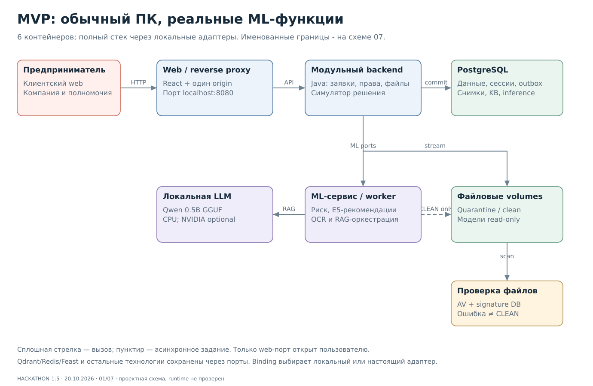
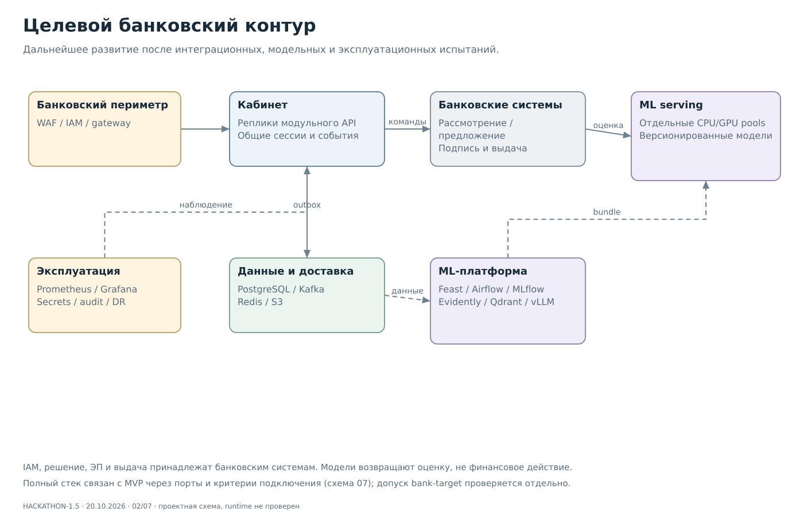
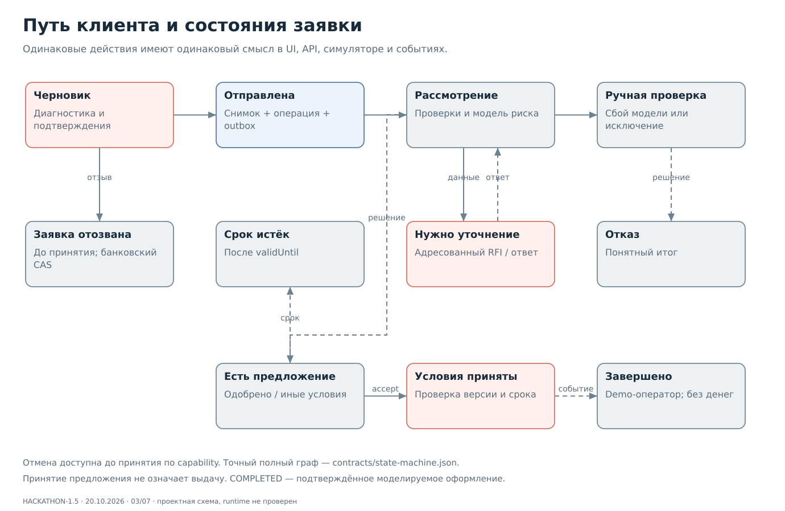
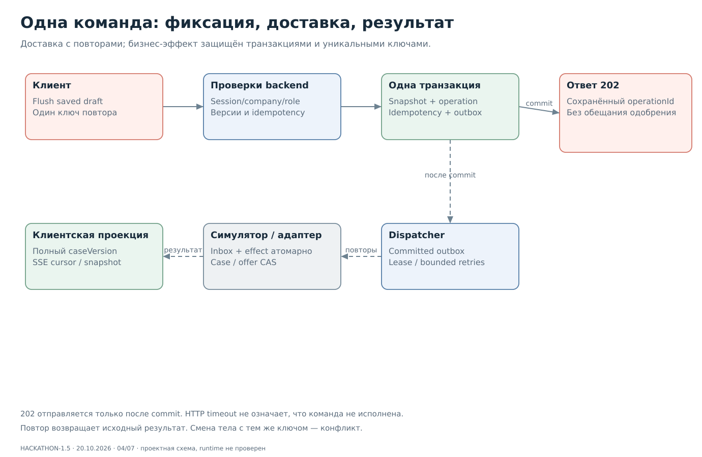
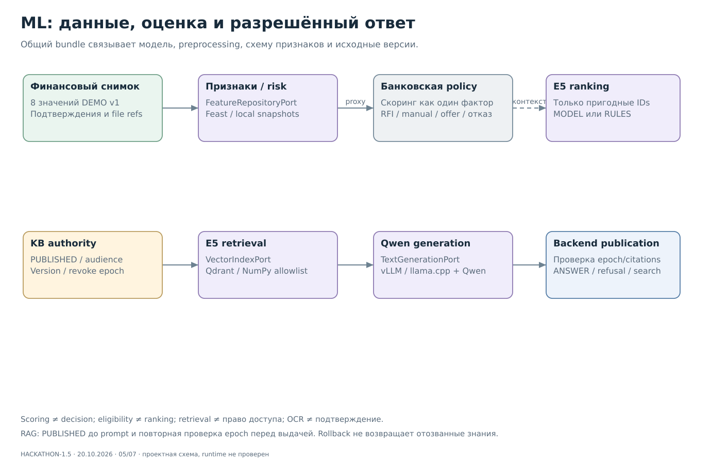
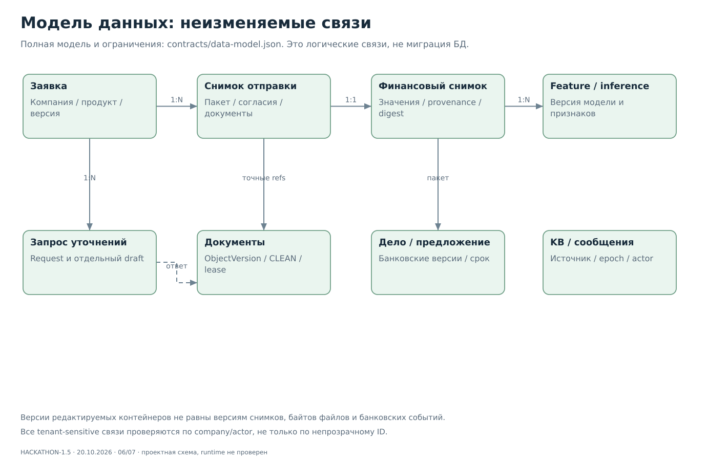
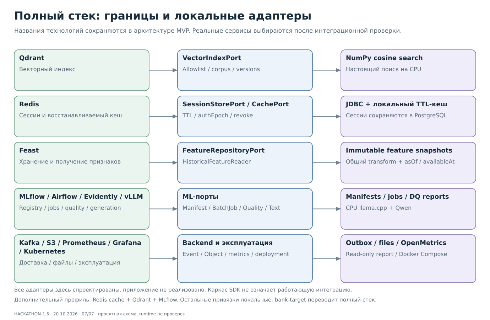

Самодостаточная спецификация. Приложение не реализовано; статические проверки отдельно от runtime.

MVP: обычный ПК, реальные ML-функции
Целевой банковский контур
Путь клиента и состояния заявки
Одна команда: фиксация, доставка, результат
ML: данные, оценка и разрешённый ответ
Модель данных: неизменяемые связи
Полный стек: границы и локальные адаптерыHACKATHON-1.5Полный технологический стек через адаптеры
Редакция HACKATHON-1.5. Qdrant, Redis, Feast, MLflow, Airflow, Evidently, vLLM, Kafka, S3, Prometheus, Grafana и Kubernetes сохранены как именованные архитектурные компоненты с назначением, владельцем и способом подключения. Java/Spring, React/TypeScript, PostgreSQL и Python ML остаются основой.
Это спецификация будущей реализации. Порты, адаптеры и Docker-профили ниже спроектированы; исполняемых адаптеров, контейнеров приложения и результатов их испытаний в этой поставке нет. Все записи каталога имеют статус SPECIFIED_NOT_IMPLEMENTED.
1. Как это устроено
Бизнес-модуль вызывает небольшой интерфейс способности: поиск, получение признаков, работа с сессией или чтение файла. В точке сборки Java/Python-приложения выбирается ровно одна реализация интерфейса. Для обычного ПК выбирается локальный адаптер; для интеграционного стенда - адаптер настоящего сервиса. SDK не импортируется из доменной логики. Общие JSON DTO описывают семантику на межпроцессных границах; интерфейс Python не превращается в Java-библиотеку.
Такой подход сохраняет технологии в структуре будущего проекта: backend/ports и backend/adapters/{local,redis,kafka,s3}; ml/ports и ml/adapters/{local,qdrant,feast,mlflow,airflow,evidently,vllm}; deploy/profiles; tests/adapter-contracts. Каталоги настоящих SDK-адаптеров на старте могут содержать интерфейс, README, план подключения и явно отключённый каркас. Каркас выбрасывает ProviderNotImplemented при попытке выбора; он не возвращает успешный фиктивный результат.
Локальный адаптер выполняет полезную работу: ищет embeddings, читает реальные снимки признаков, сохраняет сессии или считает DQ. Контрактная заглушка отдаёт подготовленный ответ для независимой разработки и тестов. Эти два режима различаются в конфигурации и отчёте защиты. Четыре согласованные ML-функции в итоговом MVP требуют настоящих моделей и вычислений.
2. Профили запуска
| Профиль |
Привязка способностей |
Условие готовности |
| local-mvp |
6 контейнеров; локальные адаптеры всех компонентов; реальные risk, рекомендации, OCR, RAG |
Обязательный CPU-профиль; общий путь, данные и безопасность проверены |
| local-integrations |
Пример: настоящий Redis для кеша, Qdrant для индекса, MLflow для registry; прочие привязки локальные |
Дополнительная задача P27; проверены SDK, серверы, ресурсы и общий контракт. Сессии остаются JDBC |
| bank-target |
Настоящие сервисы полного стека и банковские системы |
Отдельные платформенные, модельные и банковские gates; схема не означает промышленный допуск |
Примеры конфигурации: contracts/examples/profiles/*.json. Это не исполняемый Compose. Схема выбора: contracts/adapter-bindings.schema.json; полный каталог: contracts/technology-adapters.json. Профиль local-integrations допускает проверенные варианты с одним сервисом; каждый выбранный провайдер и его зависимость должны совпадать. Сам факт запуска контейнера не означает интеграцию приложения.
Неизвестный провайдер, отсутствующая способность, неподдержанный SDK или отсутствующий реализованный адаптер останавливают запуск соответствующего профиля. Смена провайдера выполняется при управляемом перезапуске. Автоматического переключения источника сессий, финансов, KB или безопасных файлов при отказе нет. Восстанавливаемый кеш может дать miss с чтением разрешённого первоисточника.
3. Что заменяет каждую технологию
| Технология и граница |
Локальная реализация MVP |
Настоящее подключение и предел замены |
| Qdrant / VectorIndexPort |
NumPy: точный cosine search, metadata, allowlist точных версий |
QdrantVectorIndexAdapter; отсутствуют ANN-масштабирование и распределённый индекс |
| Redis / SessionStorePort |
PostgreSQL/JDBC: TTL, версия, отзыв сессии |
RedisSessionAdapter; миграция с инвалидированием старых сессий, без fallback |
| Redis / CachePort |
Ограниченный локальный TTL-кеш производных данных |
RedisCacheAdapter; локальный кеш не общий между репликами |
| Feast / FeatureRepositoryPort и HistoricalFeatureReader |
Общий transform, неизменяемые снимки в ML-схеме PostgreSQL |
FeastFeatureRepositoryAdapter; registry/materialization/online store не эмулируются |
| MLflow / ModelRegistryPort |
Content-addressed manifests, реальные evaluation reports и approval |
MlflowModelRegistryAdapter; UI и распределённый tracking отсутствуют |
| Airflow / BatchJobRunnerPort |
Явные offline-команды и журнал заданий с lease/idempotency |
AirflowBatchJobRunnerAdapter; нет календарного scheduler/backfill |
| Evidently / QualityReportPort |
Вычисленный DQ/метрики baseline, размер выборки и provenance |
EvidentlyQualityReportAdapter; нет доказанного production drift на синтетике |
| vLLM / TextGenerationPort |
Настоящий llama-server + Qwen GGUF на CPU |
VllmGenerationAdapter; отдельная проверка модели/формата/GPU, без обещания битового паритета |
| Kafka / EventTransportPort |
PostgreSQL outbox/dispatcher/inbox, доставка с повторами |
KafkaEventTransportAdapter; outbox/inbox сохраняются, Kafka-протокол не эмулируется |
| S3 / ObjectStorePort |
Версионные файлы quarantine/clean и metadata/hash в БД |
S3ObjectStoreAdapter; локальный volume не обеспечивает multi-node durability |
| Prometheus / instrumentation |
Реальный OpenMetrics endpoint и структурированные logs |
Scrape/retention binding; exporter не заменяет хранилище и alerting Prometheus |
| Grafana / представление измерений |
Локальный read-only отчёт с датой и evidence |
Dashboard binding с настоящим datasource; отчёт не эмулирует Grafana |
| Kubernetes / развёртывание |
Docker Compose для одного ПК |
Манифесты, PV/secrets/probes/network policies; Compose не обеспечивает HA/multi-AZ |
Порты вводятся для поведения приложения. Для Grafana/Kubernetes достаточно границы эксплуатации и конфигурации поставки: искусственные бизнес-интерфейсы ради названия технологии не нужны. Ограничения локального адаптера являются частью контракта, а не скрытой технической задолженностью.
4. Общие правила интерфейсов
Каталог содержит signatures, DTO, ownerRole/dataOwner, ограничения, правила переключения, contractCases и задачи. Существующие public/internal OpenAPI и строгие события остаются wire-источниками истины версии 1.4.0-design; документационная версия 1.5 не меняет API. Изменение DTO требует контрактного PR с примерами, а не локального исправления SDK-адаптера.
Для внешнего вызова задаются deadline, traceId и техническая identity; tenantScope вычисляет сервер. Классы ошибок порта: InvalidInput, NotFound, Forbidden, VersionConflict, Unavailable, DeadlineExceeded, ProviderNotImplemented. Адаптер переводит SDK-ошибки в этот набор; наружу не выходят connection string, query text и секреты. Бизнес API сохраняет ранее согласованные HTTP-ошибки; временный отказ ML ведёт к согласованному fallback.
Каждый порт получает одну общую группу проверок инвариантов и отдельные проверки конкретного сервиса. Общая группа проверяет допустимый результат, безопасность, версии и отказ, а не полную совместимость чужого протокола. Для настоящего провайдера дополнительно проверяются timeout/retry/connection pool/ресурсы и выбранные SDK/server версии. Неподключённый сервис имеет NOT_EXECUTED, а не PASS по локальной реализации.
5. Qdrant: реальный поиск в локальной обёртке
VectorIndexPort.search принимает нормализованный finite float32[384], indexDigest, список разрешённых chunkRef и topK от 1 до 10. ChunkRef связывает documentId, documentVersion и chunkId. Backend выдаёт ограниченный allowlist опубликованных источников и аудитории; пустой allowlist возвращает пустой результат. Фильтр применяется до ранжирования, затем проверяются citations и актуальный kbEpoch перед публикацией.
NumPy-адаптер действительно вычисляет cosine similarity на небольшом immutable корпусе. Qdrant-адаптер переносит те же ограничения в payload/ID-фильтр коллекции, но индекс не становится владельцем полномочий. Для SDK/API фильтров закрепить версию при P02/P27. Нельзя сначала искать по всем клиентам, а затем надеяться скрыть чужой ответ после генерации.
Переключение: подготовить коллекцию с теми же embedding/model/corpus digests, проверить количество и версии, фильтрацию и recall на фиксированном наборе, затем выбрать provider. ANN не обязан вернуть бит-в-бит тот же порядок; threshold recall@k объявляется до проверки и измеряется. На малом проверочном наборе можно использовать exact-режим; это не доказательство промышленной скорости. Отозванные знания запрещаются authority независимо от версии индекса.
6. Redis: раздельно сессии и кеш
SessionStorePort.resolve проверяет sessionHash, expiry и authEpoch; revoke использует ожидаемую версию. Локальные сессии сохраняются в JDBC, отзыв переживает restart. Redis-провайдер обязан сохранять смысл TTL/отзыва и отказывать при недоступном authority. При потере Redis нельзя автоматически читать старые JDBC-сессии: так вернулась бы уже отозванная сессия. Плановый переход инвалидирует активные сессии и требует повторного входа.
CachePort хранит только восстанавливаемые производные значения. Ключ учитывает namespace, sourceVersion, authEpoch и companyId, если данные компании участвуют в значении. TTL и максимальный размер обязательны. Cache miss/отказ Redis разрешает чтение того же разрешённого снимка из первоисточника; права, решения и idempotency records не переносятся в кеш. В дополнительном профиле сначала подключаем именно Redis-кеш, оставляя сессии JDBC.
7. Feast: признаки и исторические данные
FeatureRepositoryPort.create получает неизменяемый финансовый снимок и transformDigest, возвращает существующий FeatureSnapshot. get читает точный snapshotId/digest. Источник финансов и кредитное решение остаются на стороне банка; ML владеет схемой и преобразованием признаков. Повтор одного submissionSnapshotId/codeDigest не создаёт новый смысловой снимок.
HistoricalFeatureReader принимает entities с asOf и схему признаков; каждый источник должен быть доступен на момент среза: availableAt <= asOf. Локальный адаптер читает persisted provenance, использует общий batch/online transform и проверяется на утечки будущего. Для UCI нет надёжных календарных availableAt: это ограничение baseline, а не повод выдумать временную валидацию.
Feast различает historical retrieval и online retrieval. Online latest не заменяет point-in-time join и не меняет признаки уже отправленной заявки. Target-адаптер закрепляет feature definitions/registry, источник, правила materialization и отдельный online store. Даже с Feast результат, использованный в скоринге, сохраняется как immutable snapshot с digest.
8. MLflow, Airflow, Evidently и vLLM
MLflow-порт локально читает approved content-addressed bundle и записывает реальные evaluation reports. Registry alias разрешается в неизменяемую версию до активации; controller отдельно проверяет approval и включает релиз. Переименование alias не должно менять уже работающую модель. Инференс не зависит от доступности UI registry.
Airflow-порт принимает только allowlisted offline jobType и inputDigest/requestKey. Журнал хранит QUEUED/RUNNING/SUCCEEDED/FAILED, attempt, lease и hashes результатов. Подготовка признаков, обучение baseline, построение индекса и оценка запускаются явно вне клиентского запроса. Успех задания не даёт права автоматически опубликовать модель.
Evidently-порт локально считает missingness, объём данных и доступные метрики baseline. При отсутствии зрелых labels или достаточной выборки возвращает INSUFFICIENT_DATA. На синтетическом показе не объявляем доказанное качество или drift. Для настоящего Evidently закрепляются версии отчёта, окна и thresholds; общие численные показатели сравниваются отдельно от UI.
vLLM-порт сохраняет интерфейс генерации с approved context, bundleDigest, promptDigest, deadline и maxTokens. CPU llama.cpp выполняет реальный inference. vLLM требует отдельного проверенного формата артефактов, tokenizer/revision/precision и подходящего GPU; GGUF bundle не обещается загрузить тем же бинарным файлом. При смене engine повторяются golden/injection/citation проверки. Timeout означает SEARCH_ONLY, а подготовленный текст допустим только в обозначенном test double.
9. Переключение и параллельная разработка
P01 фиксирует порты, DTO и synthetic fixtures. Backend реализует локальные session/cache/event/object адаптеры в P25; ML реализует feature/vector/generation в P11/P14; интегратор собирает manifest/job/quality/metrics bindings в P26 с review ML. Frontend работает через прежний клиентский API и MSW: названия инфраструктуры не появляются в клиентском пути.
Минимальный каркас настоящего адаптера: зависимость SDK выключена в local-mvp, интерфейс реализован явно отключённым классом, README с mapping и ограничениями, общая группа тестов помечена NOT_EXECUTED до подключения сервиса. Проверка выбора такого каркаса должна завершаться ProviderNotImplemented. Подключение работающего SDK и сервиса - отдельный проверяемый PR, а не переименование локального класса.
Порядок для любого реального сервиса: закрепить версии/лицензии → реализовать adapter → поднять сервис → прогнать общие и специальные проверки → перенести/проверить данные → выбрать binding → провести smoke/restart/failure → записать доказательство в release. Рискованный dual-write в authority запрещён; shadow-read допустим на синтетике без второго бизнес-эффекта. Rollback возвращает согласованный полный bundle и проверенный provider; отзыв прав/KB не откатывается.
Оценка обязательного объёма увеличена на 9 человеко-часов локальных адаптеров и их проверки. P27 добавляет ещё 8 часов для настоящих Redis-cache/Qdrant/MLflow и не входит в обязательную сумму; это оптимистичная оценка при знакомых SDK. Feast/Airflow и другие сервисы сохраняются в архитектуре и каркасах, их полноценное внедрение не скрывается под этими 8 часами.
10. Как представить жюри
На схеме показать три колонки: именованный компонент стека → порт/граница → выбранный локальный или настоящий адаптер. Затем продемонстрировать один сквозной вызов, например RAG: KB allowlist → VectorIndexPort → NumPy cosine → Qwen → проверка источников. Для Redis показать сессию после restart и cache miss; для Feast - immutable feature snapshot и provenance. Так видны и архитектура, и фактическое поведение.
Для каждого компонента release-отчёт содержит capability, intendedTechnology, selectedProvider, implementationStatus, testStatus, commit, artifact/config digest и evidence path/hash. Метки: ARCHITECTURAL_SLOT, LOCAL_SUBSTITUTE, REAL_CONNECTED, TEST_DOUBLE. REAL_CONNECTED допускается только после реального интеграционного прогона и доказательства; отсутствие результата явно обозначается NOT_EXECUTED. Сам provider manifest не доказывает работоспособность.
Рекомендуемая формулировка: «Архитектура предусматривает Qdrant, Redis и Feast через стабильные границы. На этом стенде векторный поиск выполняет NumPy-адаптер, сессии сохраняются в PostgreSQL, признаки - в версионированных снимках. Вот действующий путь и проверки; вот конкретный mapping подключения сервисов». Успешную демонстрацию установленного Qdrant можно назвать реальной интеграцией только если приложение действительно выбрало его адаптер.
Источники и комплект
Различия historical/online: Feast feature retrieval. Фильтрация индекса: Qdrant filtering. Java SDK: Redis Lettuce. Неизменяемая привязка registry: MLflow workflows. Проверено 20.10.2026; проектный mapping и выбор адаптеров являются нашими архитектурными решениями. Точная совместимость SDK/server версий закрывается при реализации.
Машинный каталог, схема конфигурации, примеры профилей, план, Git и защита, редактируемый атлас.
Открыть PDF
HACKATHON-1.5Архитектурный аудит: решение для хакатона
HACKATHON-1.5. 20 октября 2026 года. Общая архитектура, backend, frontend и ML проверены как единая спецификация.
Вердикт
Архитектурная основа разумна: модульный Java backend, отдельный Python ML, неизменяемая отправка, версии документов, outbox/inbox и банковский владелец решения. Но исходные четыре пакета не составляли единый готовый план разработки: ML-расширение оставалось preview, обязательный runtime был перегружен, отсутствовали отдельные внутренние границы.
Выявлено 20 новых замечаний: 13 P1 и 7 P2. Исправления внесены в новый самодостаточный комплект, не поверх исторических отчётов. Предыдущие 30 замечаний пересмотрены отдельно в evidence/prior-audit-recheck.json и не посчитаны повторно. Исходные 302 файлов сохранены в evidence/originals.zip с покомпонентными SHA-256.
Спецификация допускает параллельную реализацию после P01/P02. Работающий MVP пока не существует. Статическая корректность API не доказывает транзакции, безопасность runtime, производительность или качество моделей. Банковский production не допущен.
Продуктовая оценка
Центр решения - предприниматель, который понимает подходящий продукт, сохраняет введённое и получает следующий шаг без обязательного звонка. Правильные элементы: предзаполнение, понятный статус, адресованный RFI, несколько исходов, обязательное действие выше рекомендованного контента. Устраняем противоречие «один продукт» против трёх и добавляем финансовый/RAG путь к web-спецификации.
Проверяем завершение заявки/RFI, время до отправки, сохранность ввода и понимание статуса. У проекта нет проведённого CustDev/usability baseline; заявления о подтверждённой конверсии, ROI или сокращении потерь были бы необоснованными. На следующем этапе провести 3-5 наблюдаемых проходов разных ролей, фиксируя ошибки и вопросы; этот малый smoke не является репрезентативным исследованием.
Безопасность и бизнес-логика
Самые значимые границы: company/actor/role, серверные подтверждения финансов, неизменяемые снимки, CLEAN bytes, разные версии draft/RFI/offer, peer approval модельного bundle и финальная проверка отозванного источника RAG. Proxy риска не является PD; score не является решением, принятие предложения не является выдачей.
Уточнены потеря ответа и повтор ключа, изменение содержимого с тем же ключом, конкурентный draft, смена компании между вкладками, RFI-only финансовое изменение, lease/generation OCR, истечение/принятие/отзыв offer и restart. Условия production G01-G08 не подменены локальной синтетикой.
Технологии и масштабирование
Оставлены Java/Spring, React/TypeScript, PostgreSQL и Python. Документально подтверждены Java21/Boot4.1.1; неподтверждённая пара Modulith2.1/Boot4.1 больше не обязательна для MVP. Версии платформы/весов/OCI фиксируются до runtime в P02: существующей сборки приложения нет.
Обязательный local-mvp работает по проекту на обычном CPU-ПК, GPU - ускорение. Именованный полный стек сохранён через обязательные порты и локальные адаптеры: Qdrant/Redis/Feast и остальные компоненты имеют mapping, владельца, ограничения и контракт подключения. Настоящие сервисы выбираются в дополнительном профиле; реальные risk/OCR/RAG/semantic recommendations обязательны на CPU. Сначала масштабируем пулы/очереди/DB/file storage и измеряем bottleneck; microservices не являются первым исправлением.
Цели target 99,95%, p95 300/500 мс,1k/5kRPS и RPO5 мин/RTO30 мин сохранены как гипотезы/требования, а не результаты. Для малого CPU RAG введён отдельный budget60 с; latency основной команды не включает длительную генерацию. Документальные источники: docs/sources.md и evidence/technical-evidence.json.
Сроки и риск
Базовая оценка - 112 человеко-часа, с 25% резервом - 140.0. Критический путь зависимостей: P01 → P03 → P05 → P08 → P15 → P17 → P18 → P20 → P23, нижняя оценка 35 активных часов при неограниченных ресурсах. Один ML-специалист имеет 30 часов модельных задач, которые нельзя считать параллельными.
Для 5 участников/72 ч объём реалистичен при готовых навыках и доступных артефактах, запас ограничен.3 участника/48 ч не обеспечивают согласованный объём; при 3/72 и 5/48 риск высок. К 12 ч нужен вертикальный срез, далее общая интеграция каждые 4-6 ч. Fallback сохраняет доступность продукта, но не заменяет успешный прогон 4 реальных ML-функций в критерии готовности.
Корректировка сохранения технологий
Редакция 1.4 чрезмерно отделяла Redis/Qdrant/Feast и остальной стек как target-only. По уточнению пользователя 1.5 сохраняет их уже в архитектуре MVP через заменяемые адаптеры. Удаление обязательных тяжёлых сервисов из CPU-развёртывания не должно удалять интерфейсы, задачи и доказуемый путь интеграции. Полная спецификация: docs/technology-adapters.md; wire API остаётся 1.4.0-design. Ранее собранная версия 1.4 сохранена отдельно с SHA-256.
Оценка по направлениям
| Направление |
Оценка |
Что ограничивает вывод |
| Бизнес-ценность |
Логично связаны сохранение, уточнения и следующий шаг |
Нет подтверждённого CustDev/ROI baseline |
| Бизнес-логика |
Владельцы, версии и небинарные исходы согласованы |
Нужны транзакционные испытания приложения |
| Клиентский путь |
Финансы/OCR/RFI/RAG связаны с основным сценарием |
Нужны наблюдаемые проходы пользователей |
| Безопасность |
Границы доступа и отказные режимы специфицированы |
Нет security-тестов runtime и production-допуска |
| Масштабирование |
Модульность и ограниченные очереди дают путь роста |
Нет замеров 5kRPS/HA/DR; локальный профиль не HA |
| Технологии и сроки |
Компактный runtime с 4 ML-функциями оправдан |
Supply chain/CPU smoke ещё предстоят; сроки рискованны |
Допустимые упрощения: synthetic customers, bank simulator, одна OCR-форма, небольшой KB, pretrained semantic ranking и отсутствие распределённого MLOps runtime. Они не считаются дефектами. Отдельные будущие улучшения: поведенческий ranker, банковская PD, multi-AZ, автоматизированный lifecycle обучения. Отсутствие этих улучшений не маскирует обязательные 4 ML-функции MVP.
Реестр новых замечаний
H01 [P1] ML-расширение не применено к базовым пакетам
Источник: output/credit-workspace-ml-architecture/api/integration-preview-metadata.json:2; фрагмент «REVIEW_ONLY_NOT_APPLIED». SHA-256 и исходник - в evidence/. Класс: несогласованность.
Сценарий/последствия: Frontend и backend начинают разработку по 49 операциям, ML ожидает 60 и новую финансовую форму.
Исправление: Принят единый публичный OpenAPI 1.4.0-design, 60 операций; все четыре пакета получают точные генерируемые копии.
Проверка: public-count, copies-identical, public-openapi. Статус: исправлено в спецификации; runtime не проверен.
H02 [P1] Финансовый снимок не входит в банковский пакет
Источник: output/credit-workspace-backend-architecture/api/internal-openapi.json:6041; фрагмент «"SubmissionPackage"». SHA-256 и исходник - в evidence/. Класс: несогласованность.
Сценарий/последствия: Новый submit подтверждает финансовую версию, но банковский адаптер получает пакет без ссылки на неё.
Исправление: SubmissionPackage и AmendmentPackage требуют financialStatementVersion и серверный financialSnapshotId.
Проверка: financial-package-fields, immutable-financial-reference. Статус: исправлено в спецификации; runtime не проверен.
H03 [P1] Две несовместимые активные границы скоринга
Источник: output/credit-workspace-backend-architecture/api/internal-openapi.json:799; фрагмент «/internal/v1/risk/evaluations». SHA-256 и исходник - в evidence/. Класс: несогласованность.
Сценарий/последствия: Адаптер отправляет старые бизнес-поля вместо восьми коэффициентов из неизменяемого снимка.
Исправление: В согласованной версии активны risk v2 и rankings v2; старые пути исключены из нового контракта, миграция перечислена.
Проверка: no-legacy-risk, internal-openapi. Статус: исправлено в спецификации; runtime не проверен.
H04 [P1] Для RAG не описан внутренний HTTP-контракт
Источник: output/credit-workspace-ml-architecture/api/public-extensions.openapi.json:1667; фрагмент «/api/v1/assistant/messages». SHA-256 и исходник - в evidence/. Класс: несогласованность.
Сценарий/последствия: Публичный помощник есть, но backend и ML не могут независимо реализовать вызов с авторизованным контекстом.
Исправление: Добавлен POST /internal/v2/assistant/answers с серверным company/subject, kbEpoch, allowlist источников и единым ответом.
Проверка: rag-internal-route, rag-context-fixtures. Статус: исправлено в спецификации; runtime не проверен.
H05 [P1] Модель не имеет контрактного чтения feature snapshot
Источник: output/credit-workspace-ml-architecture/api/internal.openapi.json:3850; фрагмент «"featureSnapshotId"». SHA-256 и исходник - в evidence/. Класс: несогласованность.
Сценарий/последствия: Risk API принимает ID снимка, но способ получить именно этот snapshot не описан; возникает чтение чужих таблиц или текущего черновика.
Исправление: Добавлен GET /internal/v2/feature-snapshots/{featureSnapshotId}; авторизованный сервис получает неизменяемый снимок и проверяет digest.
Проверка: snapshot-read-route, snapshot-digest-fixtures. Статус: исправлено в спецификации; runtime не проверен.
H06 [P1] Вход ранжирования не содержит текстов кандидатов
Источник: output/credit-workspace-ml-architecture/api/internal.openapi.json:4210; фрагмент «"candidateIds"». SHA-256 и исходник - в evidence/. Класс: несогласованность.
Сценарий/последствия: Семантический ranker получает IDs и не может вычислить близость без неописанного доступа к каталогу.
Исправление: Добавлены contextText и candidateTexts; backend проверяет точное совпадение IDs, возвращённая перестановка не расширяет eligibility.
Проверка: ranking-text-inputs, ranking-permutation-fixtures. Статус: исправлено в спецификации; runtime не проверен.
H07 [P2] Exposure metadata необязательна в ответах
Источник: output/credit-workspace-ml-architecture/api/integration-preview.openapi.json:16651; фрагмент «"rankingMetadata"». SHA-256 и исходник - в evidence/. Класс: несогласованность.
Сценарий/последствия: UI получает рекомендации без exposureId и не может связать реальные показы с обратной связью.
Исправление: rankingMetadata обязательна в RecommendationList и Feed для MODEL и RULES; display itemId равен productId/cardId.
Проверка: ranking-metadata-required, exposure-fixtures. Статус: исправлено в спецификации; runtime не проверен.
H08 [P1] Схема допускает неподдержанные стандарты отчётности
Источник: output/credit-workspace-ml-architecture/api/public-extensions.openapi.json:3336; фрагмент «"RSBU"». SHA-256 и исходник - в evidence/. Класс: несогласованность.
Сценарий/последствия: MVP принимает RSBU/IFRS, хотя mapping восьми полей описан только для собственной синтетической формы.
Исправление: В MVP разрешён только DEMO Financial v1; расширение стандартов требует новой версии mapping.
Проверка: finance-standard-fixtures. Статус: исправлено в спецификации; runtime не проверен.
H09 [P1] Отсутствует обязательная финансовая версия для выбранного MVP
Источник: output/credit-workspace-ml-architecture/api/integration-preview-metadata.json:9; фрагмент «optional in global schema». SHA-256 и исходник - в evidence/. Класс: несогласованность.
Сценарий/последствия: Три новых продукта могут быть отправлены без подтверждённых финансов, если реализация читает только OpenAPI.
Исправление: Все три synthetic-продукта имеют единые финансовые требования; financialStatementVersion обязателен в submit и RFI response.
Проверка: submit-financial-required, rfi-financial-required. Статус: исправлено в спецификации; runtime не проверен.
H10 [P1] MVP требует Linux/NVIDIA и распределённые ML-хранилища
Источник: output/credit-workspace-ml-architecture/docs/07-operations.md:5; фрагмент «MVP-NVIDIA». SHA-256 и исходник - в evidence/. Класс: несогласованность.
Сценарий/последствия: Жюри не может проверить прототип на обычном ПК; инфраструктура поглощает время вместо сквозного сценария.
Исправление: CPU Compose с локальными адаптерами для полного технологического стека; Qdrant/Redis/Feast/Airflow и другие компоненты закреплены через порты и selectable providers. Реальные сервисы подключаются отдельным профилем; NVIDIA optional. HACKATHON-1.5 отменяет трактовку target-only.
Проверка: cpu-profile, target-separation. Статус: исправлено в спецификации; runtime не проверен.
H11 [P1] Модели генерации и embeddings не выбраны
Источник: output/credit-workspace-ml-architecture/README.md:35; фрагмент «пока не выбраны». SHA-256 и исходник - в evidence/. Класс: несогласованность.
Сценарий/последствия: Нельзя оценить ресурсы, лицензии и обеспечить независимый локальный RAG.
Исправление: Выбран CPU baseline Qwen2.5-0.5B-Instruct-GGUF Q4_K_M + multilingual-e5-small; hashes/OCI digest фиксирует P02 до реализации.
Проверка: model-selection, supply-chain-gate. Статус: исправлено в спецификации; runtime не проверен.
H12 [P2] Неподтверждённый ranking deadline 150 мс
Источник: output/credit-workspace-ml-architecture/docs/07-operations.md:16; фрагмент «150 мс». SHA-256 и исходник - в evidence/. Класс: несогласованность.
Сценарий/последствия: Холодный CPU embedding вызывает постоянный fallback, и работающий ML остаётся невидимым.
Исправление: Разделены target SLO и MVP budgets: ranking 2 с с прогревом/кешем неизменяемых candidates; risk 3 с; RAG 60 с.
Проверка: budget-consistency. Статус: исправлено в спецификации; runtime не проверен.
H13 [P1] Базовый UI ориентирован на один продукт и не включает ML-путь
Источник: output/credit-workspace-frontend-architecture/README.md:15; фрагмент «один продукт». SHA-256 и исходник - в evidence/. Класс: несогласованность.
Сценарий/последствия: Нет согласованных экранов восьми финансовых полей, их подтверждения и RAG, frontend-задачи не покрывают ML API.
Исправление: Добавлены финансовый блок в U08/U12, RAG-виджет и история U16; три продукта, единые типы и матрица операций.
Проверка: screen-route-coverage, operation-task-coverage. Статус: исправлено в спецификации; runtime не проверен.
H14 [P2] Реестры не учитывают время и численность команды
Источник: output/credit-workspace-ml-architecture/docs/09-workplan.md:3; фрагмент «не численность команды». SHA-256 и исходник - в evidence/. Класс: несогласованность.
Сценарий/последствия: Тридцать ML-задач и десятки web/backend-задач принимаются за выполнимый граф на 48 часов.
Исправление: 27 задач: 25 MVP, 1 optional-integrations, 1 bank-target; часы обязательного и дополнительного объёма считаются отдельно; первые 12 часов - вертикальный срез.
Проверка: task-dag, task-hours, critical-path. Статус: исправлено в спецификации; runtime не проверен.
H15 [P2] Полный canary требует недоступного объёма трафика
Источник: output/credit-workspace-ml-architecture/policies/release-policy.json:34; фрагмент «"minCandidateRequests": 1000». SHA-256 и исходник - в evidence/. Класс: несогласованность.
Сценарий/последствия: Хакатонный релиз не может завершить canary, либо команда выдаёт синтетику за реальную статистику.
Исправление: В MVP ручное утверждение digest и offline smoke, без статистического canary; промышленные пороги сохранены только в bank-target.
Проверка: release-profiles. Статус: исправлено в спецификации; runtime не проверен.
H16 [P1] Прежний общий валидатор не включает ML-пакет
Источник: tools/validate_architecture_review.py:157; фрагмент «for package in [B,F]». SHA-256 и исходник - в evidence/. Класс: несогласованность.
Сценарий/последствия: Зелёный прежний отчёт не выявляет расхождения новых схем и маршрутов ML.
Исправление: Новый общий валидатор проверяет четыре пакета, единые контракты, новые отрицательные примеры и граф задач.
Проверка: all-four-packages, negative-fixtures. Статус: исправлено в спецификации; runtime не проверен.
H17 [P2] Повторная сборка требует соседний исторический пакет
Источник: output/credit-workspace-backend-architecture/README.md:34; фрагмент «соседний исходный». SHA-256 и исходник - в evidence/. Класс: воспроизводимость.
Сценарий/последствия: Извлечённый отдельно пакет не воспроизводится без исходной структуры и контрольных сумм upstream.
Исправление: Новая поставка самодостаточна; builder читает только вложенные docs/contracts/diagram sources. Исторические материалы остаются архивом.
Проверка: self-contained, deterministic-build. Статус: исправлено в спецификации; runtime не проверен.
H18 [P2] Не определён единый регламент Git и фиксации сдачи
Источник: output/credit-workspace-backend-architecture/docs/03-technology.md:38; фрагмент «commit». SHA-256 и исходник - в evidence/. Класс: пробел поставки.
Сценарий/последствия: Описание образов с commit не определяет PR, ветки, владельцев shared-файлов и заморозку версии.
Исправление: Отдельный git-and-jury-guide с trunk workflow, владельцами, checkpoint, release tag, доступом жюри и checklist.
Проверка: git-handbook, jury-traceability. Статус: исправлено в спецификации; runtime не проверен.
H19 [P2] Результаты статических проверок требуют новой области доказательств
Источник: output/credit-workspace-ml-architecture/validation-report.json:4; фрагмент «Static architecture package». SHA-256 и исходник - в evidence/. Класс: граница доказательств.
Сценарий/последствия: Проверки одного ML-пакета ошибочно используются как доказательство готовности общей системы.
Исправление: Два статуса: статические проверки поставки выполнены; все испытания приложения запланированы и не выполнены.
Проверка: evidence-boundary, runtime-not-executed. Статус: исправлено в спецификации; runtime не проверен.
H20 [P1] Три сохранённых примера прежнего аудита не соответствуют ожидаемой валидности
Источник: tools/validate_architecture_review.py:35; фрагмент «FIXTURES.append(dict(name=title,schema=name,expectedValid=valid,value=value))». SHA-256 и исходник - в evidence/. Класс: дефект доказательств.
Сценарий/последствия: Объект value сохраняется по ссылке, затем меняется. Экспорт содержит положительные примеры с неправильным snapshot/package и отрицательный upload с уже добавленной версией; прежний PASS не подтверждает выданные fixtures.
Исправление: В текущем валидаторе сохраняется deepcopy, три fixture восстановлены с явным журналом миграции; после записи каждый fixture перечитывается с диска и проверяется повторно.
Проверка: serialized-fixtures-revalidated, fixture-migration-log. Статус: исправлено в спецификации; runtime не проверен.
Что поставлено и что проверено
Четыре актуальных руководства, канонические публичный/внутренний/demo контракты, строгие события и примеры, модель данных/состояний,7 редактируемых схем, каталог 13 технологических способностей, единый граф 27 задач,43 сценария будущей приёмки, Git/жюри-регламент, шаблоны поставки и самодостаточная пересборка.
Фактические статические результаты сохраняются в validation-report.json; визуальный протокол - visual-review.json с hashes PDF. Исходная история сохранена отдельно. Наличие описанного сценария не означает, что он выполнялся против приложения.
Далее: создать приложение по задачам, закрыть supply-chain/compatibility gate, измерить CPU и повторить чистый запуск. Публикация сайта, создание GitHub-репозитория, приглашение жюри и отправка материалов в эту архитектурную работу не входят и не выполнялись.
Открыть PDF
HACKATHON-1.5Работа с Git и защита перед жюри
Практический регламент для команды 3-5 человек на 48-72 часа. Документ применяется к будущему репозиторию приложения. Этот комплект содержит спецификацию; ни репозиторий, ни PR, ни доступ жюри автоматически не создавались.
Часть I. Разработка
1. Один репозиторий и владельцы
Единый monorepo: frontend/, backend/, ml/, contracts/, deploy/, demo/, tests/, docs/. Корневой README объясняет запуск, а не историю проектирования. Все API берутся из contracts/, generated-копии не редактируются. Большие веса и исходный исследовательский dataset не коммитятся: отдельный release bundle с hashes/licences, публичным бесплатным способом получения и offline-копией для показа.
Роли: BACKEND владеет бизнес-переходами, таблицами и миграциями; FRONTEND - UX; ML - transforms/models/KB retrieval; INTEGRATION - контракты, Docker и общая поставка; QA_DEMO - независимая проверка и защита. Для 3 человек INTEGRATION/QA распределяются между backend/frontend, ML остаётся отдельным владельцем. Для 4 QA_DEMO совмещает frontend с peer-проверкой backend; для 5 роли разделяются. У автора нет права единолично принимать собственный критичный PR/модельный релиз.
На старте записать реальные имена в CODEOWNERS и таблицу ролей. До этого .example не считается настроенной защитой. API, shared DTO, migration numbering, dependency locks и compose изменяются с review владельца; feature-ветка не «захватывает» все shared-файлы сразу.
2. Ветки и PR
Рабочая ветка main постоянно собирается. Короткие ветки feature/P08-financial-confirm, fix/P18-cross-company и docs/P21-readme. Долгоживущая develop и отдельные «frontend-ready/backend-ready» не используются. Ветка живёт обычно до 4-6 часов; незавершённая функция скрывается feature flag, не ломая основной сценарий.
Коммит - одна осмысленная проверяемая правка. Формат feat(applications): confirm saved financial version, fix(access): reject stale company context, docs(demo): add RFI walkthrough. Не коммитить секреты, дампы, пользовательские документы, model caches, node_modules и virtualenv. .env.example содержит имена и безопасные описания, но не действующие значения. Если секрет попал в историю, сначала отозвать/перевыпустить его; удаление строки не устраняет компрометацию.
Перед работой получить свежий main и создать feature-ветку. Rebase допустим только для собственной неразделяемой ветки. В общую ветку и main force-push запрещён. PR маленький и завершённый: проблема/новое поведение, затронутый контракт, проверка и ограничения. Скриншот - дополнение к воспроизводимому сценарию, не замена.
Один независимый reviewer обязателен. Contracts/security/финансовые переходы проверяет назначенный владелец и второй доступный участник при существенном риске. Не ждать завершения всех направлений: frontend использует MSW, backend - ML doubles, ML - synthetic contract fixtures. Такие doubles явно помечаются и не выдаются за работу модели на защите.
3. Контракты и конфликты
Сначала PR контракта: изменение OpenAPI/schema + положительный/отрицательный пример + потребители и связанная задача. После merge потребители обновляют generated types и заглушки. В 1.4 нет live-клиентов, поэтому несовместимый design-change разрешён согласованно, но не тихим изменением wire-shape в одном направлении.
Номер миграции назначает backend-владелец; уже применённая миграция неизменна, исправление - следующей миграцией. Общий контракт не разрешается конфликт-стратегией «взять моё»: владелец объединяет смысл и проверяет обе группы примеров. Сначала исправлять авторский источник, потом повторно генерировать types/PDF/diagram.
Если конфликт в собственной ветке: получить main, обновить свою ветку, разрешить руками, проверить diff и прогнать профильные проверки. Не удалять чужие файлы, чтобы «прошла сборка». Неразделяемую переписанную feature-ветку при необходимости публиковать с force-with-lease; main и ветки других участников так не обновляются.
4. Автоматические проверки
На каждом PR: сборка и типы затронутого кода, проверка формата без исправлений, OpenAPI/JSON Schema/ref/совпадение generated-копий, поиск секретов и проверка изменённых зависимостей. Для backend-переходов - PostgreSQL-тесты CAS/outbox/idempotency; для frontend - профильный сценарий формы; для ML - transforms/parity/shape/digest и evaluation report. Документационный PR не обязан переобучать модели.
На main и перед release: integrated Docker smoke, seed, основной путь, RFI, negative access, restart и проверка 4 реальных ML-функций. Dependency/OCI/model digests входят в SBOM/release manifest. Проверка внешней scanner DB и весов выполняется при подготовке образов, не во время пользовательской операции.
Правила branch protection: PR required, минимум 1 approval, required CI checks, запрет force-push/delete main. Если выбранный тариф/visibility не поддерживает нужную защиту, это отмечается явно и вводится процедурный peer-check; не писать, что техническая защита включена без проверки настроек. В этой поставке настройки аккаунта не менялись.
5. Интеграционный ритм
0-2 ч: контракт/распределение ответственности и синтетические IDs. К 12 ч: один реальный путь web→backend→DB→симулятор→status, с сохранением после restart. На первом срезе допустим подготовленный seed подтверждённых финансов и явно обозначенные ML doubles; запреты версии/прав не обходятся «временным» endpoint.
Каждые 4-6 часов - короткий общий прогон main и фиксация сломанного шага с владельцем. Ошибка интеграции важнее новой карточки/анимации. К 24 ч должны быть зафиксированы API финансов/RFI, CLEAN-путь файлов и выбранные/запускающиеся CPU-модели. К 36 ч - подключение реальных ML-функций; при отставании пересмотреть capacity и публично зафиксировать риск.
Для окна 72 ч заморозка новых функций на 60 ч, следующие 8 ч - регрессия/README/чистый запуск/репетиция, последние 4 ч - версия/проверка доступа/резерв. Для окна 48 ч заморозка на 36 ч. Полный согласованный объём не объявляется готовым, если после заморозки реальные ML заменены заглушками.
6. Веса, лицензии и поставка
Артефакт модели имеет repository/revision/file, SHA-256, licence file, code/preprocessor/feature schema, evaluation digest и approved-by. «latest», имя папки или один номер modelVersion без содержимого недостаточны. Большой bundle хранится вне Git с публичным бесплатным источником и контрольной суммой; для offline-показа комплект готовится заранее. Git LFS разрешён только если жюри действительно может скачать содержимое без оплаты/корпоративного доступа.
Исследовательский UCI-датасет описывается отдельно от synthetic demo seed. THIRD_PARTY_NOTICES содержит версии/лицензии фактически включённых компонентов, моделей, traineddata, datasets и перечень симулируемых IAM/БКИ/ФНС/банковского конвейера/оформления. Список названий без проверки фактических бинарников не закрывает лицензирование.
6a. Провайдеры и каркасы сервисов
Порты и contracts/technology-adapters.json фиксируются в P01; локальные backend-адаптеры - P25, ML feature/vector/generation - P11/P14, registry/job/quality/metrics bindings - P26. SDK-адаптеры хранятся отдельными модулями с явным статусом. Выбор неготового каркаса обязан остановить запуск с ProviderNotImplemented. PR нового провайдера включает binding, SDK/server locks, общий контрактный набор и provider-specific failure tests. Общие инварианты не ослабляются ради особенностей SDK.
На сдачу сохраняются фактически выбранные providers, digest конфигурации и ссылки/hashes результатов. Статусы LOCAL_SUBSTITUTE, REAL_CONNECTED, TEST_DOUBLE и ARCHITECTURAL_SLOT отражают факты. Настоящий сервис без вызывающего его адаптера остаётся архитектурным слотом. Неподключённая интеграция получает NOT_EXECUTED; демонстрация её локального заменителя не становится PASS для сервиса.
Часть II. Подготовка к оценке
7. Самостоятельный запуск экспертом
README должен содержать: назначение и границы; architecture/context diagram; требования к CPU/RAM/disk/OS/Docker; подготовку бесплатных артефактов и их hashes; один основной способ запуска; переменные окружения; healthchecks/порты; synthetic accounts; пошаговый happy/RFI/ML сценарий; сброс только demo data; ограничения; API/состояния/модель данных/тесты; версию сдачи.
Целевой интерфейс будущего запуска: docker compose -f deploy/compose.yaml up --build -d. Установка models/bundle выполняется один раз по README до запуска. После подготовки модели и данные не скачиваются в runtime. Предусмотреть offline docker load/model bundle, проверяемый SHA-256, и отдельный безопасный reset-script с предупреждением об удалении только demo-volumes. Эти команды являются требованиями к будущему приложению: готового compose в архитектурном комплекте нет.
Для проверки подготовить 2 synthetic компании A/B и представителя каждой, отдельную demo-operator identity, 3 продукта, 10 вариантов DemoFinancial v1, 15-30 KB статей. Не использовать действующие пароли/ИНН/документы людей. Демо-credentials могут быть открыты только в локальном профиле с синтетикой; для внешнего показа - отдельная конфигурация, HTTPS и ограниченный доступ.
За два этапа до сдачи второй участник на чистой машине выполняет README без подсказок автора. Записываются OS/architecture/resources, hash релиза, команды и фактическое время startup/warmup/основного сценария. «У меня запускается» не заменяет этот протокол.
8. Пять минут защиты
| Время |
Показ |
Что доказываем |
| 0:00-0:30 |
Предпринимателю нужны деньги; открыть synthetic компанию и выбор |
Понимание задачи и продукта |
| 0:30-1:15 |
Диагностика, пригодные продукты, объяснение порядка |
Связь eligibility и реальных semantic-рекомендаций |
| 1:15-2:00 |
Финансовая форма, OCR одного файла, исправление/подтверждение |
Снижение ввода при контроле значимых значений |
| 2:00-2:50 |
Отправка, сохранённый статус, запрос одного уточнения и ответ |
Работающий конвейер и небинарная логика |
| 2:50-3:30 |
Показать изменение ленты и pinned next action; RAG со ссылкой |
Персонализация по контексту без потери обязательного шага |
| 3:30-4:10 |
Результат, альтернативные условия, принятие; demo-завершение |
Финансовая логика и честное моделирование операций |
| 4:10-5:00 |
Отдельно 1 сбой/защита, схема Qdrant/Redis/Feast → порты → выбранные адаптеры |
Безопасность, надёжность, путь развития |
До показа прогреть модели и корпус, но не подменять RAG заранее заготовленным ответом. При медленном CPU начать вопрос раньше и продолжить показ заявки; если модель не ответила, честно показать SEARCH_ONLY. Основной live-сценарий управляется реальными действиями; подготовленные сценарные seed допустимы и обозначены. Видео - резервное доказательство, не замена доступному прототипу.
9. Матрица критериев жюри
| Критерий кейса |
Где демонстрируем |
Доказательство |
| Целостность |
От выбора до результата/оформления |
A01/A02, один applicationId/caseId, persisted history |
| UX |
Предзаполнение, сохранение, ясный статус/RFI |
A07/A16/A31, keyboard check и наблюдения тестера |
| Согласованность модулей |
OCR→confirm→snapshot→risk→decision |
Contracts1.4, traceId и immutable refs, A05/A28 |
| Enterprise-подход |
Tenant isolation, CAS/outbox, fail-closed files |
A08-A15/A24/A25, результаты реальных проверок |
| Потенциал развития |
Переход от local-mvp к bank-target |
Схема полного стека, provider manifest, A38-A43, gates G01-G08, ограничения локальных замен |
| Готовность к проверке |
Чистый Docker-запуск и synthetic credentials |
P20/A30/A35, README и hash версии |
Не подменять результаты приложения статическими PASS этого архитектурного комплекта. После разработки runtime-протокол заполняется фактическими данными отдельно.
10. Типовые вопросы
Почему модульный монолит? Одна транзакционная граница и меньше затрат на интеграцию для небольшой команды. Отдельные Python/LLM/worker процессы сохраняют возможность масштабировать тяжёлые задачи. Выделение остальных сервисов обосновывается измерениями.
Где настоящий ML? Logistic baseline на открытом исследовательском наборе; semantic ranking на pretrained E5; Tesseract над байтами загруженной формы; retrieval+generation локальной открытой LLM. Показать bundle/revision/evaluation. Правила банка и eligibility - отдельная логика.
Это настоящая вероятность дефолта? Нет: BANKRUPTCY_PROXY, переносимость на российский малый бизнес не подтверждена. Нельзя обещать предотвращённые потери или PD-калибровку.
Что при падении модели? Risk→MANUAL, ranking→RULES, OCR→ручной ввод, LLM→SEARCH_ONLY при доступных источниках. Потеря KB authority закрывает помощник. Fallback-показ не заменяет отдельную демонстрацию рабочих моделей.
Почему нет полного MLOps? Для статических bundle и малого набора запуск платформы не устраняет главный риск - отсутствие работающего пути. Target-платформа сохранена с условиями включения.
Как защищены деньги? Реального перевода нет. В target решение/предложение/подпись/выдача принадлежат банку; повтор бизнес-эффекта контролируется ключами, CAS и сверкой. Не заявлять exactly-once delivery.
11. Фиксация версии и сдача
До дедлайна: merged main, зелёная обязательная CI, clean startup, licenses/README/demo evidence, commit SHA в release manifest, аннотированный тег hackathon-submission-v1.0.0 на этом SHA. Репозиторий не требуется публиковать в облако для соответствия обязательному local-launch; публичный стенд - дополнительный канал.
Проверить, что тег доступен на remote и указывает на нужный commit, а команда запуска воспроизводится именно с него. Изменения после дедлайна не приписывать исходной сдаче. Не перемещать уже опубликованный submission tag; исправление - отдельный тег и явное описание с учётом правил организаторов.
Для приватного репозитория кейс указывает аккаунт жюри alfa-hack-2026. Перед предоставлением доступа сверить имя с актуальными инструкциями организаторов; проверить доступность кода, release assets и всех LFS objects. Создание приглашения и отправка материалов выполняются владельцем/по отдельному поручению, здесь не выполнялись.
Сохранить submission record: commit/tag, время дедлайна с timezone, ссылки на репозиторий/артефакты, licence inventory, hash bundle, протокол чистого запуска и список фактических ограничений. Критичные незакрытые проверки перечислить прямо. Не отправлять в жюри архивы исходных пользовательских документов/исследовательских материалов, если они не нужны для воспроизведения и нет права распространения.
12. Резервный сценарий
Подготовить тот же hash версии на локальном ноутбуке: заранее загруженные images/models, synthetic seed, проверенные offline fonts и PDF. При потере внешнего стенда открыть локальный integrated профиль. При недостатке GPU показать CPU без изменения модели. При сбое live runtime назвать сломанный шаг и показать ранее записанный прогон отдельно, затем оставить жюри инструкции воспроизведения. Не выдавать запись за текущую интерактивную работу.
Технологии на защите: проверяемый рассказ
Отдельное руководство показывает полный mapping. За 20 секунд объяснить: «Qdrant предусмотрен для векторного индекса; на этом CPU-стенде VectorIndexPort использует настоящий NumPy cosine search. Redis имеет отдельные порты сессий и кеша; локально они работают через JDBC и TTL-кеш. Feast-граница сохраняет immutable признаки и историческую доступность; полноценная materialization ещё не реализована». Затем показать один фактический вызов и его evidence. Это архитектурная готовность к подключению, не заявление об интеграции неработающего сервиса.
Если P27 выполнен, показать selectedProvider, изменение метрики/результата настоящего сервиса и протокол отказа. Если времени нет, показать отключённый каркас, конкретный интерфейс и общий набор проверок со статусом NOT_EXECUTED для SDK. Ни UI-скриншот сервиса, ни пустой Docker-контейнер не подтверждают интеграцию.
Открыть PDF
HACKATHON-1.5План параллельной разработки
1. Честная оценка объёма
27 задач:25 MVP, 1 дополнительная интеграционная задача и 1 отдельная задача bank-target. Оценки - человеко-часы активной работы, не календарное обещание. Текущий итог формируется из tasks.json в конце документа. Первоначальные подробные планы сохранены в архиве; новый граф группирует их по проверяемым результатам.
Для расчёта capacity используем 10 эффективных рабочих часов на участника в день, включая локальную отладку и review. Три участника:48 ч→60 человеко-часов,72 ч→90; пять:48 ч→100,72 ч→150. Недостаток capacity не устраняется названием роли. Дополнительно нужен резерв 25% к базовой оценке. Ни один вариант не считается гарантией при неизвестной подготовке команды.
Рекомендация:5 человек/72 часа и готовые навыки Java/React/Python. 3 человека/48 часов не соответствуют согласованному полному ML-объёму. Для 3/72 и 5/48 есть высокий риск. Не сокращать ML молча: на checkpoint оформить фактическое отставание и согласовать срок либо неполную готовность. Честный частичный показ не равен завершённому согласованному MVP.
2. Независимые направления
После P01 frontend работает по MSW/примеру контракта; ML - по synthetic fixtures; backend - с контрактными doubles ML; integration собирает profile и release bundle. Стабилизация порта не требует ждать реальных обученных весов. Общие данные/DTO/состояния не придумываются в feature-ветках.
BACKEND: P03→P05→P08/P10→P15. FRONTEND: P04→P06→P09→P16. ML: P11/P12/P13/P14 после P02, порядок при одном специалисте: risk baseline, рекомендации, OCR, RAG. INTEGRATION: P01/P02, P07, ранние skeleton clients, P17/P21/P23 и P26; backend выполняет P25. P27 - отдельное необязательное подключение настоящих сервисов. QA_DEMO пишет сценарии с начала, формальная независимая приёмка P18-P20 после P17.
Для 3 участников backend совмещает integration, frontend - QA_DEMO; эти роли увеличивают занятость, а не дают дополнительную параллельность. Риск перегрузки ML один и при 3, и при 5 участниках: функции последовательно требуют около 30 часов активной работы плюс интеграция. Помощь integration с model packaging/KB ускоряет без разделения бизнес-владельца.
3. Контрольные точки
- 0-2 ч: P01; единые API/ID, состояния, роли/владельцы, synthetic наборы и стенд.
- До 12 ч: вертикальный срез P07 с настоящей DB/сессией/сохранением и обозначенными model doubles. В seed уже подтверждённая demo-форма; новый обход confirm API не создаётся.
- До 24 ч: financial/RFI API, подготовленные CPU images/models, безопасный файл/job pipeline, интерфейсы подключения моделей.
- До 36 ч: стремиться к P17 и 4 реальным ML-функциям. Это целевая контрольная точка, не вывод из оценки, что все работы точно завершатся. При отставании - пересчитать остаток; прежде всего отложить P27 и дополнительную вёрстку, сохранив локальные адаптеры и весь именованный стек.
- Для 48 ч: freeze36 ч; оставшиеся 12 ч на проверку/сдачу. Если 4 ML-функции не работают, фиксировать неполноту; не переименовывать mock в model.
- Для 72 ч: freeze60 ч, регрессия/чистый запуск/репетиция до 68 ч, резерв на версию/доступ/непредвиденное до 72 ч.
Критический путь зависимостей рассчитывается автоматически. Он является нижней оценкой при неограниченном числе участников. Дополнительная ресурсная нижняя оценка учитывает последовательную работу всех ML-задач одним ML-специалистом. Реальное расписание должно учитывать сон/смены/переключения и ролевые совмещения.
4. Порядок снижения риска
Первым отложить настоящее подключение сервисов P27, registry UI/canary dashboards, расширенные типы документов, дообучение LLM и поведенческий ranker. Feast/Airflow/Qdrant/Redis и остальные технологии сохраняются в архитектуре, интерфейсах, каркасах и конфигурации даже при локальных привязках. Их SDK-реализации не выдаются за выполненные. Затем сократить polish, dashboard и дополнительные сценарии beyond acceptance. Для RAG оставить небольшой corpus и малую выбранную модель; для OCR - только одну форму; для риска - один baseline без model zoo.
Отказ отдельной модели обрабатывается безопасным fallback, но согласованный готовый MVP требует отдельного успешного прогона всех 4 ML-функций. Резервный SEARCH_ONLY не заменяет RAG-generation в критерии готовности. Корректность tenant isolation, persisted snapshot и защиты повторов не отключается ради показа.
5. Definition of Done
Задача закрыта только при наличии указанных deliverable и doneWhen из tasks.json, PR review и профильных проверок. Общий MVP закрыт после P23, всех обязательных acceptance кроме TARGET_ONLY и проверок отключённых реальных провайдеров (для них NOT_EXECUTED), чистого запуска вторым участником и реальных model manifests. Существование этих требований не означает их выполнения в архитектурной работе.
6. Дополнительная интеграция
P25/P26 добавляют 9 человеко-часов к обязательному MVP; P11/P14 реализуют ML-порты в рамках своих оценок. P27 оценивается отдельно в 8 часов и подключает настоящие Redis-cache/Qdrant/MLflow при наличии времени и ресурсов. Реализация остальных полноценных сервисов в эти 8 часов не входит. Это оптимистичная оценка при знакомом стеке; при недостатке capacity сохраняются локальные реализации и честный статус архитектурных каркасов.
Mapping, интерфейсы и критерии переключения.
7. Реестр задач
P01. Зафиксировать контракт и распределить модули
Владелец: INTEGRATION; оценка: 2 ч; зависимости: нет; профиль: mvp.
Результат: contracts + task ownership; technology ports + provider DTO semantics.
Готово, когда: 60 public ops typed; all schema refs resolve.
P02. Закрепить платформу, модели и лицензии
Владелец: INTEGRATION; оценка: 3 ч; зависимости: P01; профиль: mvp.
Результат: dependency/model locks + notices.
Готово, когда: exact versions/digests/licenses; CPU images boot; Java BOM smoke.
P03. Данные, миграции, сессия и права
Владелец: BACKEND; оценка: 3 ч; зависимости: P01; профиль: mvp.
Результат: PostgreSQL migrations + seed accounts.
Готово, когда: A/B tenant access denied; migrations twice safe.
P04. Основа web и контрактные заглушки
Владелец: FRONTEND; оценка: 3 ч; зависимости: P01; профиль: mvp.
Результат: React routes + generated types + MSW.
Готово, когда: build; 3 products; no secrets in browser.
P05. Вертикальный срез create/save/submit/status
Владелец: BACKEND; оценка: 3 ч; зависимости: P03; профиль: mvp.
Результат: persistent core API + simulator event.
Готово, когда: restart keeps draft; submit receipt dedup.
P06. Web-путь первой заявки
Владелец: FRONTEND; оценка: 3 ч; зависимости: P04; профиль: mvp.
Результат: login/catalog/form/status.
Готово, когда: same UI works mock and server; next action visible.
P07. Docker, healthchecks и первый общий smoke
Владелец: INTEGRATION; оценка: 1 ч; зависимости: P02, P05, P06; профиль: mvp.
Результат: CPU Compose + health order + smoke.
Готово, когда: fresh start end-to-end by hour 12 for 5-role team; six mandatory containers, explicit local bindings.
P08. Финансовая форма и неизменяемые снимки
Владелец: BACKEND; оценка: 5 ч; зависимости: P05; профиль: mvp.
Результат: financial read/save/confirm + package refs.
Готово, когда: all 8; CAS; modified values invalidate confirmation.
P09. Финансовый UI и запрос уточнений
Владелец: FRONTEND; оценка: 5 ч; зависимости: P06; профиль: mvp.
Результат: U08/U12 financial + RFI screens.
Готово, когда: no overwriting dirty input; unrequested values unchanged.
P10. Документы, quarantine, AV и аренда
Владелец: BACKEND; оценка: 6 ч; зависимости: P05; профиль: mvp.
Результат: streamed upload + scanner + job lease.
Готово, когда: infected/error not CLEAN; limit 10MiB/5 pages; stale lease rejected.
P11. Локальная risk-модель и feature transforms
Владелец: ML; оценка: 10 ч; зависимости: P02; профиль: mvp.
Результат: trained logistic baseline + manifests; SnapshotFeatureRepositoryAdapter (Feast boundary).
Готово, когда: 8 ratios; grouped split; score BANKRUPTCY_PROXY; no PD claim.
P12. Semantic recommendations на E5
Владелец: ML; оценка: 5 ч; зависимости: P02; профиль: mvp.
Результат: CPU embeddings + catalog ranking.
Готово, когда: PRODUCT/FEED eligible permutations; no trained click-model claim.
P13. OCR одной синтетической формы
Владелец: ML; оценка: 5 ч; зависимости: P02; профиль: mvp.
Результат: Tesseract rus+eng + fixed-layout parser.
Готово, когда: 8 fields with signs/units/pages; manual confirm; no silent repair.
P14. RAG на опубликованном корпусе
Владелец: ML; оценка: 10 ч; зависимости: P02; профиль: mvp.
Результат: E5 retrieval + local Qwen generation; NumpyVectorIndexAdapter + LlamaCppGenerationAdapter (Qdrant/vLLM boundaries).
Готово, когда: sources subset; no source => refusal; generation timeout => SEARCH_ONLY.
P15. Backend-адаптеры ML, RFI и решений
Владелец: BACKEND; оценка: 6 ч; зависимости: P08; профиль: mvp.
Результат: risk/ranking/RAG clients + simulator policy.
Готово, когда: contract doubles usable before models; finance-only RFI; model outage=>MANUAL.
P16. Лента, RAG-виджет, документы и предложение
Владелец: FRONTEND; оценка: 6 ч; зависимости: P09; профиль: mvp.
Результат: U03/U13/U15/U16 + feedback.
Готово, когда: ranking metadata; pinned next action; source links authorized.
P17. Общая интеграция четырёх ML-функций
Владелец: INTEGRATION; оценка: 6 ч; зависимости: P10, P11, P12, P13, P14, P15, P16, P25, P26; профиль: mvp.
Результат: real ML in integrated CPU profile.
Готово, когда: no mock presented as model; GPU optional; health/degradation measured; all required bindings reported truthfully, no hidden double.
P18. Security и отказные сценарии
Владелец: QA_DEMO; оценка: 5 ч; зависимости: P17; профиль: mvp.
Результат: negative E2E + failure evidence.
Готово, когда: cross-company, CSRF, malicious files, prompt injection, stale versions fail safely.
P19. Восстановление, UX и ресурсы обычного ПК
Владелец: QA_DEMO; оценка: 4 ч; зависимости: P17; профиль: mvp.
Результат: restart test + keyboard test + resource report.
Готово, когда: draft/operation persistent; no mandatory external network; RAG measured CPU.
P20. Независимая проверка чистого запуска
Владелец: QA_DEMO; оценка: 3 ч; зависимости: P18, P19; профиль: mvp.
Результат: launch report on clean machine.
Готово, когда: second person follows README without author help.
P21. Документация, API collection и лицензии
Владелец: INTEGRATION; оценка: 4 ч; зависимости: P07; профиль: mvp.
Результат: README + notices + request collection; provider manifest and jury technology evidence table.
Готово, когда: all six jury criteria mapped to evidence.
P22. Репетиция защиты и резервный показ
Владелец: QA_DEMO; оценка: 3 ч; зависимости: P17, P21; профиль: mvp.
Результат: 5-minute demo + local fallback + video.
Готово, когда: interactive scenario replay; simulated steps explicitly labelled.
P23. Заморозка, регрессия и версия сдачи
Владелец: INTEGRATION; оценка: 2 ч; зависимости: P20, P22; профиль: mvp.
Результат: release manifest + immutable tag/hash.
Готово, когда: CI green; no edits after deadline version; private access checked; archive actual selected providers/evidence, not just architecture names.
P24. Промышленная платформа и допуск
Владелец: INTEGRATION; оценка: 0 ч; зависимости: P23; профиль: bank-target.
Результат: bank-target roadmap, not hackathon implementation.
Готово, когда: all external gates independently closed.
P25. Локальные адаптеры backend и выбор провайдеров
Владелец: BACKEND; оценка: 4 ч; зависимости: P03; профиль: mvp.
Результат: SessionStore/Cache/EventTransport/ObjectStore ports and composition root.
Готово, когда: durable sessions/outbox/files; bounded cache; unknown binding fails; no security fallback.
P26. ML-платформа через локальные адаптеры и общий протокол проверки
Владелец: INTEGRATION; оценка: 5 ч; зависимости: P02; профиль: mvp.
Результат: manifest registry, offline job journal, quality report, metrics/evidence bindings; ML reviews interfaces.
Готово, когда: P11/P14 own feature/vector/generation implementations; local common-contract tests; no synthetic metrics or canned model answers.
P27. Дополнительное подключение Redis, Qdrant и MLflow
Владелец: INTEGRATION; оценка: 8 ч; зависимости: P17; профиль: optional-integrations.
Результат: real SDK adapters and optional service profile with locks.
Готово, когда: same common tests + actual service failure tests + measured resource report; if omitted say SPECIFIED, not integrated.
Базовая оценка: 112 человеко-часа; с резервом 25% - 140.0 человеко-часа. P27 - ещё 8 часов отдельной необязательной интеграции; не включена в обязательную сумму. P24 - отдельный неоценённый промышленный этап.
Открыть PDF
HACKATHON-1.5Общая архитектура кредитного кабинета
Согласованная редакция HACKATHON-1.5, 20 октября 2026 года. Это спецификация для разработки. Исполняемого приложения и результатов его испытаний в комплекте нет.
1. Продукт и критерии успеха
Пользователь - представитель малого бизнеса, оформляющий финансирование от имени компании. Кабинет должен уменьшать повторный ввод и неопределённость: что принято, чего не хватает, что происходит и что делать дальше. Банковская сторона получает сохранённые версии данных, управляемый запрос уточнений и объяснимую модель принятия решения.
Обязательный путь: вход → диагностика потребности → пригодные продукты → заявка → подтверждение финансов → отправка → обработка → уточнение при необходимости → результат → принятие условий → моделируемое оформление. Самостоятельный web-путь не требует SMS, звонка или электронной почты.
Демонстрируем три синтетических продукта: оборотный кредит, кредитная линия, овердрафт. Это не действующие условия Альфа-Банка. Предварительный расчёт не является офертой, рекомендация не является обещанием одобрения.
Основные продуктовые метрики: завершение заявки, время до отправки, восстановление черновика, завершение RFI без новой заявки и понимание следующего действия. До пользовательского исследования численные цели - гипотезы. Считать funnel по событиям start/save/submit/RFI/response/offer/acceptance/completion; клики и скорость ответа ML не заменяют завершение процесса. Не заявлять рост конверсии или сокращение банковских потерь без baseline и эксперимента.
2. Единая архитектура и три профиля
local-mvp: web + модульное Java-приложение + PostgreSQL + Python ML + локальный llama-server + scanner. Web reverse proxy и SPA находятся в одном контейнере. Банковский симулятор, файловые streaming-маршруты и dispatcher - изолированные модули Java-приложения, а не отдельные микросервисы. OCR worker - отдельный процесс того же ML-образа; задания арендуются через API. Named volumes хранят PostgreSQL, quarantine/clean и версии моделей.
bank-target: штатные IAM/WAF/gateway, управляемые PostgreSQL/Kafka/Redis/S3, Kubernetes, отдельный файловый gateway и банковский адаптер, наблюдаемость и управляемая ML-платформа. Выделение процессов выполняется по измеренной нагрузке и независимому масштабированию, а не по количеству таблиц.
Все названные технологии остаются архитектурными компонентами уже в MVP. Каждый имеет порт или эксплуатационную границу, владельца и локальный заменитель. Qdrant заменяется реальным NumPy-поиском, Redis - JDBC-сессиями и локальным TTL-кешем, Feast - immutable feature repository. Airflow/MLflow/Evidently имеют offline-job/registry/quality адаптеры. Это не эмуляция полных сервисов. local-integrations дополнительно подключает выбранные настоящие Redis-cache/Qdrant/MLflow; готовность каждого подтверждается отдельно. Полный mapping и ограничения - в общем руководстве по адаптерам.
3. Владельцы и границы
| Область |
Владелец |
Запрещённая подмена |
| Сессия и полномочия |
Access, в production IAM банка |
Клиент не назначает компанию и роль самостоятельно |
| Каталог и eligibility |
Catalog + владелец продукта |
Ранжировщик не добавляет непригодный продукт |
| Черновик и отправленные данные |
Applications |
Отправленный снимок не редактируется через PATCH |
| Согласия |
Consents |
Доступ к компании не даёт права согласиться за любого субъекта |
| Файлы и подтверждение OCR |
Documents + Applications |
Confidence не является подтверждением клиента |
| Рассмотрение и решение |
Bank simulator; в target кредитный конвейер |
ML не пишет APPROVED/DECLINED в заявку |
| Статус, next action, лента |
Workspace |
Статья не заменяет обязательное уточнение |
| Предложение и оформление |
Bank simulator; в target банк |
UI не объявляет деньги выданными без события |
| Источники RAG |
KB authority в backend |
Векторный индекс не определяет права публикации |
| Артефакты и inference record |
ML, отдельная роль хранения |
Прогноз нельзя отвязать от версии и данных |
Монолит не отменяет границ: модули взаимодействуют через application interfaces и события, не импортируют чужие repositories. Общими бывают технические типы; общей изменяемой бизнес-сущности между модулями нет. Python не пишет напрямую в таблицы заявок/решений.
4. Данные и надёжность
Одновременно с командой сервер фиксирует idempotency record, новый бизнес-объект/снимок, operation и outbox. 202 выдаётся только после commit. Dispatcher доставляет сообщения хотя бы один раз; consumer фиксирует inbox и бизнес-эффект одной транзакцией. Это не обещание exactly-once доставки.
Идемпотентный ключ ограничен actor/company/operation type, хранится 7 дней вместе с нормализованным hash тела и результатом. Правильный повтор возвращает исходный ответ до проверки нового состояния; то же имя ключа с другим телом - 409. По истечении срока повтор финансово значимого действия требует сверки, а не нового слепого вызова.
Версии независимы: Application.version/ETag, RFI requestVersion, InformationDraft.draftVersion, financial statementVersion, requirementsVersion, objectVersion, caseVersion и viewVersion. Не использовать время обновления вместо CAS. Отправка и ответ на RFI закрепляют точные documentReferences и серверный финансовый снимок.
Решения и переходы полностью перечислены в contracts/state-machine.json. Канонический публичный API содержит 60 операций; demo-входы изолированы в отдельном контракте. Проект не имеет действующих потребителей: переход с 1.2/1.3-design на 1.4-design выполняется одним согласованным изменением, а не имитацией поддержки legacy-клиентов.
5. Масштабирование и ограничения
Расчётная исходная гипотеза target: 10 тыс. активных клиентов × 0,1 запроса/с = 1 тыс. RPS; пик 50 тыс. = 5 тыс. RPS. SSE и загрузки считаются отдельно. Эта арифметика не доказывает достаточность оборудования: проверяются DB IOPS, размер записей/файлов, конкуренция, skew по компаниям и длительность запросов.
Первый предел - PostgreSQL и конкуренция обработки, а не отсутствие микросервисов. Ввести индексы company/application/status/time, keyset pagination, bounded pools и очереди; измерять p95 и возраст outbox. Реплики HTTP требуют общих сессий, stream journal и object storage. Локальный filesystem не является общим томом для нескольких узлов.
Для target сохраняются проектные цели: доступность 99,95%/месяц, p95 чтений ≤300 мс, локальных команд ≤500 мс, свежесть проекции p95 ≤5 с; RPO ≤5 мин/RTO ≤30 мин, три домена отказа. Для MVP нет заявления о достижении этих значений. Бюджеты CPU ML находятся отдельно в contracts/runtime-policy.json.
Kafka/Redis/S3/Feast/Airflow закреплены через порты с начала разработки; локальная реализация сохраняет обязательные инварианты. Настоящие сервисы выбираются конфигурацией после проверки совместимости и поведения при сбое. Kafka сохраняет outbox/inbox; Redis разделяет сессии и кеш; S3 хранит точные версии; Feast разделяет online/historical retrieval; Airflow не обучает модель в клиентском запросе. Подключение контейнера без выбранного SDK-адаптера не считается завершённой интеграцией.
6. Безопасность и допуск
В local-mvp все данные искусственные; тестовый вход явно помечен. Cookie HttpOnly/SameSite, CSRF, серверная проверка tenant/role и запрет публичного доступа к внутренним портам обязательны. HTTPS обязателен для внешнего показа; localhost допускает development cookie без Secure. Режим production не разрешает этот override.
Секреты не передаются в браузер и не лежат в Git. Внутренние сервисы используют отдельные ролевые токены в изолированной сети, target - workload identity/mTLS. AV работает fail closed; EICAR/ошибка scanner не становятся CLEAN. Модели и документы не отправляются в публичные API. Идентификаторы и hashes не являются достаточным обезличиванием.
Перед банковским пилотом нужны G01-G08: протокол IAM/полномочий; банковские команды и исходы; право/политика обработки данных; хранение/ключи/retention; лицензии и supply chain; восстановление и полный журнал принятых внешних команд; измеренные SLO/ёмкость; валидация моделей и продуктовых правил. До завершения DR-сверки финансово значимые команды запрещены. Поиск только по сохранившимся локальным ключам не восстанавливает потерянные при RPO команды.
Эти условия - инженерный план допуска, не юридическое заключение и не подтверждение соответствия нормативам.
Технологические адаптеры
Именованный стек и выбранный runtime отражаются раздельно: intended technology, selected adapter и evidence. Неизвестный provider останавливает запуск; автоматическая смена authority запрещена. Каталог интерфейсов обязателен для всех направлений.
Полная спецификация адаптеров; машинный каталог - contracts/technology-adapters.json из корня комплекта.
Общие нормативные материалы
Контрактные решения, источники, условия допуска, план разработки, приёмка.
Открыть PDF
HACKATHON-1.5Backend: контракты, данные и транзакции
HACKATHON-1.5. Java 21, Spring Boot 4.1.1, PostgreSQL 17.11 как проверенные документальные ориентиры. Приложение не собрано. Точные JDK/OCI digests и совместимость зависимостей закрывает P02. Spring Modulith исключён из обязательного MVP: модульные границы контролируются пакетами, code review и ArchUnit после проверки его версии. Логическая модульность сохраняется.
1. Модули и поток вызовов
Access → Catalog → Applications/Consents/Documents → Journey → Bank simulator → Workspace/Offers. ML вызывается через отдельные порты Feature, Risk, Ranking, OCR и Rag. Контроллеры вызывают application services, а не repositories. JPA entities не являются HTTP DTO. Open-in-view выключен; транзакция не удерживается во время HTTP, OCR, LLM или ожидания банка.
Схемы PostgreSQL по владельцам: access, catalog, applications, consents, documents, journey, integration, workspace, ml, kb. В MVP один кластер; миграции принадлежат соответствующим модулям, порядок согласует backend-владелец. Python получает разрешённые API и минимальный доступ к своей ml-схеме, но не к чужим таблицам.
Банковский симулятор сохраняет case/offer/command-result, ведёт caseVersion и применяет ту же семантику команд, что target-adapter. Это отдельный авторитет решения внутри процесса Java, а не фронтендовая кнопка изменения статуса. Нормальный happy path автоматический; demo-оператор нужен для ручной проверки и моделируемого завершения.
2. Транзакции и команды
Синхронный create возвращает 201 и тот же созданный ресурс при повторе; не придумывать operationId для каждого 201. Долговечная команда submit/response/accept/withdraw возвращает 202 и сохранённый receipt с operationId. До HTTP-ответа DB commit уже завершён.
Порядок команды: проверить аутентификацию и принадлежность company context; найти сохранённый ключ; при совпадающем hash вернуть прежний результат; иначе проверить роль, актуальность версий и бизнес-предусловия; одним commit сохранить изменение, operation, idempotency и outbox. На новых командах полномочия проверяются повторно непосредственно перед commit. Отозванная identity не получает результат чужой операции даже по старому ключу.
Дедуп обеспечивают уникальные ограничения, а не check-then-insert без блокировки. Consumer фиксирует eventId/inbox и результат атомарно. Dispatcher использует SKIP LOCKED, ограниченный batch, backoff и leases; poison message переводится в видимую ошибку, не исчезает. Истёкший worker token/generation не может завершить новое задание.
В local-mvp outbox передаётся локальным transport тем же обработчикам. Kafka не обязательна. Case projection читает полный нормализованный поток и продвигает caseVersion для всех его типов; gap инициирует CaseSnapshot и сверку. Нельзя подписаться на часть событий и ожидать последовательные глобальные версии.
Принятие/истечение/отзыв предложения разрешает единый банковский CAS. Результат зависит от банковского времени и исходного offerVersion, а не состояния кнопки в UI. Исходная заявка и предыдущие финансовые снимки остаются неизменными. Отзыв DRAFT выполняется локальным CAS без банковского дела; после отправки результат отмены подтверждает симулятор/банк.
3. Финансовые данные и RFI
Все три demo-продукта требуют восемь подтверждённых значений DEMO Financial v1. Неполный черновик разрешён. В MVP не просить повторно вводить Business.annualRevenue: UI показывает его как предварительную диагностику, а после подтверждения авторитетен FinancialStatement.revenueMinor. Policy cap и модель используют только подтверждённый финансовый снимок. annualExpenses/currentDebt не подменяют EBIT/totalLiabilities; возраст бизнеса остаётся отдельным eligibility-полем. В финансовой форме periodStart/periodEnd задают один полный календарный год; RUB, integer minor units. Equity, netProfit, EBIT могут быть отрицательными. totalAssets >0, currentAssets ≤totalAssets, currentLiabilities ≤totalLiabilities. Пропуск и ноль различаются.
Баланс проверяется с демонстрационным допуском max(100 копеек, 1% totalAssets). Допуск не является банковской нормой. Подтверждение требует всех восьми полей, по одной уникальной provenance на поле, совпадения statementVersion и точных source document versions. Внесённое изменение сбрасывает подтверждение; сервер формирует actor/time/source. Обычный PATCH не принимает confirmed/provenance/confirmedExtractionIds.
При submit после flush UI сохраняет expectedVersion, requirementsVersion, financialStatementVersion, documentIds и documentReferences. Сервер сравнивает сохранённые версии, создаёт financialSnapshotId и immutable CreditPackage в одной транзакции. Клиент не может передать financialSnapshotId. Feature snapshot вычисляется после commit из этого финансового снимка и сохраняется неизменяемо до risk inference.
RFI имеет requestVersion, OPEN/CLOSED и адресованные FIELD/DOCUMENT/EXPLANATION. Финансовый ответ начинается полной копией прежней формы; PUT может изменить только запрошенные значения. Даже если финансовый блок не менялся, response закрепляет текущую подтверждённую версию. Подтверждение полного блока не разрешает изменять незапрошенные поля. Response сравнивает draftVersion, requestVersion, requirementsVersion и сохранённое тело, затем создаёт новый amendment/financial snapshot. SUBMITTED исходная анкета не изменяется.
При PATCH business merge выполняется по полям; отсутствие означает «не менять», разрешённый clearFields - «очистить». Присваивание и очистка одного пути одновременно даёт 422. Версии и целые числа ограничены безопасным диапазоном JSON 1..9007199254740991.
4. Файлы
Upload intent закрепляет company/application, размер, MIME, checksum, requirementId и парные requestId/requestVersion при RFI. Файл передаётся потоково с ограниченным буфером; лимит 10 MiB/5 страниц, PNG/JPEG/PDF. Сначала quarantine; проверяются сигнатура, MIME, структура и AV. Рендер страницы ограничен 40 млн пикселей; лимит декодированного изображения проверяется до выделения полного буфера. PDF с активным содержимым/вложениями/шифрованием не принимается в demo-форму; рендеринг идёт в изолированном worker с лимитом времени/памяти.
CLEAN требует подтверждённого objectVersion, checksum и положительного scanner verdict. AV ERROR остаётся quarantine. Signature DB scanner включена в подготовленный bundle, в runtime сеть для обновления не нужна; отсутствующая база не превращается в успешную проверку. Для optional-формы пользователь может удалить файл и ввести данные вручную. В демонстрации OCR используется настоящий CLEAN-файл.
Cancel upload и finalization используют один CAS upload-state. Проигравший объект удаляется сборщиком мусора; он не становится доступным. Completion повторно проверяет grant/context/размер/checksum/срок. Grant короткоживущий, связан с сессией и действием, не публикуется в логах. Download проверяет права и точную версию; никакого произвольного filesystem/S3 URL из браузера.
OCR lease содержит workerId, leaseToken, generation, job type, expiry и objectVersion. READY не меняет подтверждённые данные автоматически. Обновлённый файл или истёкшая аренда делают старый результат недействительным.
5. ML и банковское решение
Риск: POST /internal/v2/risk/evaluations получает ссылку и digest feature snapshot. GET /internal/v2/feature-snapshots/{featureSnapshotId} возвращает именно неизменяемый снимок, доступный роли ml-risk в ML-сервисе. FeatureSnapshotInput содержит financialSnapshotId/digest и точные financialStatement, скопированные адаптером из CreditPackage. Python не читает «последнюю анкету компании». Запрос с несовпадающим digest отклоняется. Inference record фиксируется до успешного ответа.
Рекомендации: backend отбирает eligibility/publication, передаёт IDs, тексты и разрешённый coarse context. Ответ проверяется как полная перестановка множества. Метаданные exposure сохраняются для MODEL и RULES. PRODUCT требует eligibilityVersion. Для feedback itemId равен productId или FeedCard.cardId; чужой exposure запрещён, clientEventId уникален в контексте пользователя.
RAG: BFF создаёт контекст companyId/subjectRef, allowedSources, kbEpoch и requestId. Внутренний API доступен только роли bff. Backend ещё раз проверяет источники после генерации и при чтении истории/ссылок. Никакие поля браузера не могут расширить allowlist.
Продуктовая demo-policy v1: сначала DQ/полномочия/согласия и eligibility; неполные или противоречивые данные → RFI; технический сбой риска → MANUAL; отрицательный equity либо liabilities/assets ≥0,9 → DECLINED. Иначе сумма ограничивается min(product.maxAmount, 25% годовой выручки); запрос выше этого лимита → ALTERNATIVE. Среди оставшихся score≥0,5 → MANUAL, иначе APPROVED. Нулевая выручка → MANUAL. Все пороги искусственные, версия policy записывается с решением; score BANKRUPTCY_PROXY не считается PD. Ручное решение обязательно оформляет операторскую запись с основанием, а не прямой UPDATE.
Каталог: оборотный 100 тыс.-5 млн RUB/3-24 мес.; линия 300 тыс.-10 млн/6-36 мес.; овердрафт 50 тыс.-2 млн/1-12 мес. Все synthetic; возраст бизнеса минимум 6/12/12 месяцев соответственно. Диагностика со сведениями UNKNOWN просит уточнить вход, а не угадывает eligibility. Предложение содержит полную сумму, срок, disclosure, version, validUntil (+24 часа demo clock). Принятие актуальной версии отличается от «подписания/выдачи».
6. Эксплуатация и проверки
Бюджеты: обычный API 2 с, risk 3 с, ranking 2 с, RAG 60 с, OCR 120 с; внешние вызовы используют отдельные ограниченные executors. Под общий web pool не ставить генерацию LLM. Метрики: latency/errors, DB pool, outbox age, jobs by state, stale projections, denied access и degraded ML modes. Logs содержат trace/opaque IDs, но не токены, файлы и полные финансовые/чат-тела.
Приёмка: docs/acceptance.md. H2 не заменяет PostgreSQL; статические проверки не заменяют runtime-нагрузку и DR.
Технологические адаптеры
SessionStorePort/CachePort разделяют Redis-сессии и восстанавливаемый кеш; EventTransportPort сохраняет PostgreSQL outbox/inbox при подключении Kafka; ObjectStorePort связывает filesystem/S3 с exact objectVersion и CLEAN. P25 реализует локальные адаптеры и composition root. Идемпотентность, CAS, полномочия и quarantine не заменяются заглушками; отказ authority закрывает действие.
Полная спецификация адаптеров; машинный каталог - contracts/technology-adapters.json из корня комплекта.
Общие нормативные материалы
Контрактные решения, источники, условия допуска, план разработки, приёмка.
Открыть PDF
HACKATHON-1.5Frontend: путь клиента и интеграция
HACKATHON-1.5. React 19/TypeScript, React Router 7, TanStack Query 5, React Hook Form 7, Zod 4 и MSW 2 - выбранные семейства. React 19.3.0 и Node 24 LTS подтверждены официальными страницами; точные версии остальных средств фиксируются package-lock после совместной сборки P02. Не считать ориентиры готовым lock-файлом приложения.
1. Экраны и ответственность
Одна SPA, один origin, один источник server state. Feature-модули access/company/catalog/application/documents/journey/feed/assistant; общий API layer генерируется из contracts/public.openapi.json. Использовать существующую библиотеку Ant Design после совместимости её выбранной версии; её Form не становится вторым владельцем формы React Hook Form.
| Экран |
Маршрут и результат |
| U01 |
/login - явно демонстрационный вход |
| U02 |
/companies - выбор разрешённой компании |
| U03 |
/workspace - заявки, pinned next action, персональная лента |
| U04 |
/needs - цель/сумма/срок и диагностика |
| U05 |
/products - пригодные варианты и различия |
| U06 |
/products/:productId - synthetic условия и disclosure |
| U07 |
/applications/:id/company - предзаполненные данные компании |
| U08 |
/applications/:id/business - бизнес-поля и восемь финансовых значений |
| U09 |
/applications/:id/documents - необязательная demo-форма, OCR и согласия |
| U10 |
/applications/:id/review - итог, подтверждения и отправка |
| U11 |
/applications/:id/status - статус/история/следующий шаг |
| U12 |
/applications/:id/information/:requestId - адресованный ответ RFI |
| U13 |
/offers/:offerId - версия/срок/условия и принятие |
| U14 |
/inbox - сообщения внутри продукта |
| U15 |
/applications/:id/files - доступные CLEAN-документы |
| U16 |
/assistant/:conversationId? - RAG, история и проверяемые ссылки |
RAG также открывается виджетом в U03/U11; он не становится обязательным шагом заявки. Для отрицательного исхода объяснить итог и доступные действия, не обещая обход решения. MANUAL означает проверку, не отказ. COMPLETED содержит явную надпись «демонстрация, деньги не перечисляются».
2. Сохранение и команды
React Hook Form владеет несохранённым вводом. TanStack Query владеет серверными чтениями. На черновик - последовательная очередь автосохранения; предыдущий ответ не может затереть новый ввод. Перед submit/response дождаться flush и получить свежие версии; ошибка сохранения останавливает отправку, оставляя введённый текст.
Каждая мутация передаёт If-Match там, где он определён контрактом. Результат 409/412 показывает конфликт и предлагает перечитать/сопоставить данные; автоматического overwrite нет. Network retry изменяющей операции использует тот же Idempotency-Key и неизменённое тело. Новый ключ при timeout не создаётся. Закрытая кнопка не заменяет серверную идемпотентность.
Key команды создаётся до отправки и сохраняется в sessionStorage вместе с company/resource/type, но без financial/body/token. После reload UI ищет operation по ключу и читает список активных и завершённых операций за dedup window. Публичный DTO не содержит банковский externalRequestId.
При 401 приостановить фоновые запросы и предложить вход с восстановлением сохранённого черновика; 403 не повторять; 404 не раскрывает чужой объект; 409/412 требует актуализации; 422 показывает field errors; 429 учитывает Retry-After; 503 показывает задержку и безопасное повторение. Обрывы не-JSON на файловом маршруте обрабатываются отдельным безопасным текстом.
3. Компания и поток событий
Активная компания - общий контекст cookie-сессии, а не независимое значение во вкладке. Session.contextVersion и X-Company-Context защищают мутации. BroadcastChannel сообщает другим вкладкам о смене: отменить запросы, очистить Query cache, закрыть stream, сохранить несохранённый ввод отдельно и получить новую session. Локальное поколение запросов препятствует применению устаревших ответов.
SSE реализуется fetch-клиентом, который может передать Last-Event-ID и проверяет HTTP-ответ. Heartbeat/повтор ограничены. При gap/истёкшем cursor получить barrier snapshot, затем перечитать затронутые ресурсы и все страницы списков. complete=false не означает, что первые 100 заявок составляют полный контекст. Финансовый блок, RFI, документы и offer обновляются отдельно; события не перезаписывают dirty-form.
Потеря stream показывает «Данные на …, обновление задерживается» и кнопку ограниченного refresh. Не рисовать DECLINED из timeout. Next action определяется серверным состоянием и остаётся выше статей при любой ML-деградации.
4. Финансы и OCR
Показать период, валюту/единицы и все восемь полей. Хранить денежный ввод строкой; точное преобразование в копейки, без float. Отрицательные капитал/прибыль/EBIT допустимы, пустое поле не равно нулю. Визуальная проверка формата не заменяет server-side DQ.
OCR - предложение значений с источником/страницей, а не автоматическое изменение отправленной заявки. Клиент сравнивает, редактирует и подтверждает каждое финансовое значение; одна кнопка финального confirm может объединять восемь явных подтверждений. Результат привязан к objectVersion и extractionId. Любое последующее изменение сбрасывает confirmed-state. При OCR failure доступен ручной ввод.
В RFI изменяемыми являются только запрошенные поля. Полная форма показывается с заблокированными остальными значениями; подтверждение не снимает эту блокировку. Финансовая версия и draftVersion ответа передаются вместе с requestVersion/requirementsVersion.
Для файлов использовать upload intent и bounded binary upload; прогресс может идти через XHR, JSON через generated API client. QUARANTINE/SCANNING/CLEAN/FAILED различаются в UI; CLEAN не означает OCR READY. Заблокированная кнопка имеет текстовую причину.
5. Персонализация и помощник
Показы продуктов/материалов подтверждаются после видимости ≥50% карточки ≥1 с как проектная договорённость. Отправлять clientEventId/exposureId/itemId/VIEW либо CLICK; не отправлять от имени клиента SUBMITTED/FULFILLED. Backend проверяет атрибуцию. Полученный порядок не может убрать next action.
RAG имеет states loading/ANSWER/SEARCH_ONLY/INSUFFICIENT_EVIDENCE/error. В CPU-профиле таймаут браузера 65 с; интерфейс позволяет отменить запрос и продолжить основной путь. SEARCH_ONLY показывает только ссылки с пояснением, что генерация недоступна. При ANSWER источники кликабельны, но цитата сама по себе не доказывает правильность каждого утверждения.
Assistant не объясняет персональную риск-оценку, не обещает ставку/одобрение, не подписывает документы. HTML/Markdown от модели отображается с escaping и запретом активных ссылок вне разрешённых внутренних источников. История может скрыть отозванный ответ: объяснить, что источник больше не доступен.
6. Демонстрационные режимы и доступность
Два режима для разработки: MSW с общей контрактной моделью и integrated с настоящим backend. В компонентах нет if-demo; выбирается API implementation в entry point. Mock mode сбрасывается и не считается доказательством долговечности. Приёмка и показ жюри используют integrated CPU profile.
Demo-operator работает в отдельной сессии; его UI/API не включаются во внешнюю public-сборку. Переключение операторской панели не даёт клиентскому браузеру административную роль.
Основной путь проходит клавиатурой, focus переносится на ошибку/заголовок нового шага; labels, textual errors, contrast и reduced motion поддерживаются. Не блокировать всю страницу из-за фоновой загрузки RAG. Срок сессии предупреждает о выходе без потери сохранённых данных. Проверить минимум узкий web viewport и обычный desktop, без отдельного mobile app.
Технологические адаптеры
Frontend использует прежний public API и MSW, независимо от выбора NumPy/Qdrant, JDBC/Redis или local/Feast. В клиентских экранах показываются понятные статусы и следующий шаг. Технический provider manifest нужен в закрытом инженерном отчёте для защиты, без секретов и персональных данных; клиенту не предлагается выбирать инфраструктуру.
Полная спецификация адаптеров; машинный каталог - contracts/technology-adapters.json из корня комплекта.
Общие нормативные материалы
Контрактные решения, источники, условия допуска, план разработки, приёмка.
Открыть PDF
HACKATHON-1.5ML: реальные функции в компактном MVP
HACKATHON-1.5. ML обязателен в согласованном объёме: риск, semantic-рекомендации, OCR и RAG. Наличие этой спецификации не означает, что веса скачаны, модели обучены или качество измерено. Промышленные правила прежнего ML-пакета сохранены в contracts/bank-target-release-policy.json и архиве, но не являются условиями локального canary на синтетическом трафике.
1. Минимальный runtime
Python 3.12 + FastAPI/Pydantic 2, NumPy/scikit-learn для риска, multilingual-e5-small для embeddings, Tesseract 5.x/tessdata_fast rus+eng для OCR, Qwen2.5-0.5B-Instruct-GGUF Q4_K_M в llama-server. Конкретные версии Python-зависимостей, revision моделей, traineddata и OCI digests фиксируются P02/P11-P14. Пока manifest не содержит реальные SHA-256, релиз не допускается; фиктивных hashes здесь нет.
Qwen выбран как малый открытый CPU baseline, а не как доказанно качественная банковская модель. E5 используется и для текстовой близости продуктов, и для поиска знаний с отдельными индексами/версиями. Для малого корпуса достаточно нормализованной матрицы NumPy и metadata. Runtime не запускает training и не скачивает модели. Точный NVIDIA GPU/VRAM неизвестен; GPU ускоряет тот же bundle и не меняет модель автоматически.
Проектный ориентир CPU-стенда: 8 logical cores, 16 GiB RAM, 20 GiB свободного диска. Это начальная конфигурация для измерения, не подтверждённый минимальный размер. Проверяется поддерживаемый CPU ISA и архитектура OCI; arm64/amd64 - отдельные smoke. GPU-profile только после проверки driver/CUDA и паритета результатов.
2. Риск: смысл, данные, обучение
Открытый исследовательский baseline - UCI Polish Companies Bankruptcy, только 5year.arff. Официальный источник описывает 5910 наблюдений и 410 банкротств в горизонте одного года; лицензия CC BY 4.0. Это не данные Альфа-Банка и не банковская PD. Пользователи/компании/документы в демонстрации остаются полностью синтетическими; реальные строки UCI не превращаются в карточки клиентов.
MVP алгоритм: SimpleImputer(median + missing indicators) → StandardScaler → LogisticRegression(max_iter=2000, random_state=42). Подготовка и обучение fit только на train. Отдельный калибратор для демонстрационного proxy не делает результат PD. CatBoost - следующий сравнительный вариант, не ещё одна обязательная задача на 48 часов.
Из подтверждённых значений рассчитываются X1=netProfit/assets, X2=liabilities/assets, X3=(currentAssets-currentLiabilities)/assets, X4=currentAssets/currentLiabilities, X7=EBIT/assets, X8=equity/liabilities, X9=revenue/assets, X10=equity/assets. Equity означает book value в согласованной demo-форме. При assets≤0 нет score; нулевой знаменатель X4/X8 даёт missing+indicator. Единый transform-код в batch и online; пропуски не заменяются нулями до imputer.
До split сгруппировать точные дубликаты по нормализованному полному вектору; конфликтующие метки вывести на разбор. Использовать сохранённый grouped stratified split 60/20/20, seed42. В наборе нет надёжного companyId/времени каждого решения: не заявлять company-disjoint или temporal validation, не объединять горизонты как календарные годы. Остаточный риск скрытых повторений компаний документируется.
Публикуются dataset checksum/split membership, ROC-AUC, PR-AUC вместе с prevalence, Brier, confusion matrix и интервалами неопределённости. Тест не используется для выбора гиперпараметров. Не придумывать показатели качества до обучения. Баланс классов не изменять в test.
3. Неизменяемые признаки и inference
Java фиксирует финансовый снимок; feature-builder читает его, вычисляет отношения и сохраняет FeatureSnapshot в ml-схеме с featureSchemaVersion=2, code digest, asOf, source availability и digest. Владелец feature snapshot API - ML; вычисления выполняет общий Python-transform. Bank adapter передаёт финансовые значения из неизменяемого CreditPackage в createFeatureSnapshot, не давая Python доступ к текущему черновику. Повтор одного submissionSnapshotId/codeDigest возвращает тот же снимок.
Risk API получает snapshotId/digest и читает разрешённый snapshot через GET /internal/v2/feature-snapshots/{featureSnapshotId}. Не пересчитывать из текущего черновика. Время availableAt каждого входа не позже asOf; исторические исправления не переносятся в прошлое. Hash считается от канонического JSON с фиксированными именами/порядком сериализации; версии формата входят в manifest.
Ответ BANKRUPTCY_PROXY/DEMONSTRATION связывается с requestId, inferenceId, featureSnapshotDigest, modelVersion и bundleDigest. Inference record должен быть долговечным до успешного ответа; недоступный внешний сборщик метрик не равен отказу локального журнала. Score и internalReasonCodes видит банковский симулятор, но не клиентское API.
Бюджет risk 3 с; повтор с тем же requestId возможен только для того же snapshot/bundle. Ошибка, несовместимая схема или невозможность сохранить inference record → MANUAL. Риск не изменяет решение или offer самостоятельно. PD/VALIDATED и purpose=CREDIT_RISK закрыты в local-mvp независимо от того, что общая schema описывает target-возможность.
4. Рекомендации как содержательная модель
Пользовательские поведенческие метки пока отсутствуют. Поэтому реальная ML-функция MVP - pretrained semantic ranking E5, без заявления об обученной по кликам персонализации. Для PRODUCT контекст - назначение финансирования и coarse business category; для FEED - стадия и утверждённый текст полезного следующего шага. Персональные финансы/причины риска/документы не передаются ranker.
Backend формирует пригодные candidateIds/candidateTexts, catalogVersion и eligibilityVersion. Python применяет документированные E5 префиксы query:/passage:, mean pooling с attention mask и L2 normalization; считает cosine similarity. Tie-break по исходному стабильному порядку. Ответ содержит ровно перестановку кандидатов. Модель не принимает решение о пригодности и не генерирует условия продукта.
PRODUCT и FEED имеют отдельные artifact manifests и кеши; source model может быть общим. Изменение catalog/text/model revision требует нового digest. Embeddings кандидатов готовятся до показа; прогрев query encoder входит в readiness. Бюджет ranking 2 с. При ошибке → RULES с тем же допустимым набором; pinned next action не входит в перестановку.
Exposure записывает сервер. Frontend сообщает реальные VIEW/CLICK с дедупликацией; completion/submit приходят из бизнес-событий. Без закрытых окон атрибуции и достаточных меток не запускать CatBoostRanker и не оптимизировать выдачу кредита по CTR.
5. OCR одной формы
Поддерживается собственная DemoFinancial v1: одна страница, восемь полей, явные подписи, год, RUB и масштаб «рубли с копейками». Исходные synthetic PNG/PDF и варианты печати включаются в будущий seed. Это не универсальное распознавание отчётности РСБУ/МСФО.
Tesseract rus+eng извлекает текст и координаты; fixed-layout parser нормализует пробелы, знак, десятичный разделитель и minor units. Нечитаемое значение остаётся missing; знак/баланс не «чинится» догадкой. Confidence нормализуется в [0,1] из engine score и помечается как техническая величина, а не вероятность достоверности поля.
Worker получает только CLEAN objectVersion и действующую lease; результат содержит generation, worker/token, engineVersion, поля/страницы. Парсер-версия и traineddata hashes входят в bundle. Любой результат требует подтверждения пользователя; correction сохраняется рядом с исходным OCR и точной версией файла. При отказе OCR ручной ввод сохраняет основной путь.
Проверка MVP: минимум 10 synthetic вариантов, включая отрицательную прибыль, нулевой долг, знак минус, запятую/пробелы и низкое качество. Измерять exact match восьми полей после нормализации и ошибки знака/масштаба. Эти примеры не доказывают промышленную точность. Target-набор 200 проверенных документов и canary оставлен следующим этапом.
6. RAG и публикация знаний
Начальный корпус - 15-30 коротких утверждённых synthetic статей о процессе и demo-продуктах. Компания/полномочия/consent сохраняются в backend. Статусы знаний DRAFT/PUBLISHED/REVOKED, documentVersion, effectiveUntil и audience задаёт KB authority. Локальная публикация через служебный API требует отдельной роли content-owner; клиент не загружает документы в KB через OCR.
Ingestion ограничивает размер, очищает активное содержимое, разбивает текст примерно по 300 токенов с overlap40 и сохраняет IDs/chunk hashes. Авторизованный corpus manifest задаёт версии. E5 retrieval top3, точные права/публикация проверяются до помещения в prompt. Threshold подбирается на сохранённом QA-наборе P14: точное значение и evaluation digest обязательны в bundle, универсального similarity threshold нет.
Генерация: Qwen GGUF Q4_K_M, context2048 tokens, output≤192 tokens, concurrency1, temperature0.1. Бюджет генерации 45 с внутри общего 60 с; max очередь 4, 1 запрос/сессию и 5 запросов/мин. Превышение очереди →429. Перед вызовом исключить sensitive финансовые данные и внутренние причины решения. Модель не имеет tools, сетевого доступа и прав записи в заявку.
Ответ ANSWER содержит внутренние ссылки на использованные document/version. Backend проверяет, что все citations входят в retrieval allowlist и всё ещё PUBLISHED. Не обещать математической проверки истинности каждого предложения малой LLM: нужен QA и консервативные отказы. Неподтверждённый ответ подавляется. Нет источников/слабый retrieval → INSUFFICIENT_EVIDENCE; LLM timeout при пригодных источниках → SEARCH_ONLY с пустым answer и ссылками. Поисковый fallback не выдаётся за генерацию.
Отзыв: DB-транзакция ставит REVOKED и увеличивает kbEpoch. Перед фактической выдачей ответа BFF под короткой блокировкой публикации повторно проверяет epoch/права; при изменении отбрасывает ответ и перечитывает источники. Если revoke завершился раньше этого commit выдачи, новые ответы/история/ссылки источник не раскрывают. Уже доставленные пользователю байты отозвать невозможно; не обещать обратного. В local-mvp один backend держит publication fence: final response/history/source read используют read-permit; revoke закрывает новые permits, фиксирует epoch, дожидается завершения или отменяет начатые публикации и только затем объявляет ENFORCED. 202 receipt сам по себе не означает ENFORCED. Долгая генерация permit не удерживает. Уже отправленные в сеть байты могут прийти позже; это не новая серверная публикация. После commit индекс чистится асинхронно. Rollback bundle не откатывает deny-реестр. Недоступный authority закрывает RAG, а не весь кредитный путь.
MVP QA: 20 golden вопросов и 10 атак с ручной проверкой каждого ответа; отдельно source recall, корректность ссылок/отказов и injection. Это smoke, не statistically validated benchmark. В target сохраняются более крупные golden/adversarial наборы, независимая оценка и lifecycle.
7. Выпуск, наблюдаемость и развитие
Локальный release bundle объединяет weights, preprocessors, feature schema, corpus/index manifest, prompt, engine versions, licences и hashes. Автор не утверждает собственный bundle: один peer проверяет evaluation digest и фиксирует approval. Перезапуск с прошлым полным bundle - rollback; файл модели отдельно от preprocessing не подменяется.
В MVP JSON logs/health/metrics endpoints и сохранённый evaluation report достаточны; запуск Grafana не является обязательной частью демо. Считать latency/errors/fallback mode, input DQ, queue age, source denials и invalid citations. Drift на малой синтетике не запускает автоматическое переобучение.
Feast, MLflow, Airflow, Evidently, Qdrant и vLLM присутствуют в логической архитектуре MVP через именованные границы и локальные реализации. Дополнительный профиль может выбирать настоящие сервисы; bank-target переводит весь стек на полноценные реализации после проверок. Их ограничения и критерии переключения описаны в общем каталоге. Training/serving пулы изолируются. Retraining требует созревших labels и data access approval; release - независимого допуска, canary и rollback. Исторические strict events меняются только новой версией схемы/темы.
Технологические адаптеры
FeatureRepositoryPort/HistoricalFeatureReader сохраняют Feast-границу; VectorIndexPort связывает NumPy/Qdrant; TextGenerationPort связывает CPU llama.cpp/vLLM. ModelRegistryPort, BatchJobRunnerPort и QualityReportPort имеют локальные рабочие реализации и будущие MLflow/Airflow/Evidently adapters. Python composition root выбирает provider; роли и immutable данные не меняются. SDK-каркас без реализации явно отклоняет вызов, а не отдаёт успешный фиктивный ответ.
Полная спецификация адаптеров; машинный каталог - contracts/technology-adapters.json из корня комплекта.
Общие нормативные материалы
Контрактные решения, источники, условия допуска, план разработки, приёмка.
Открыть PDF